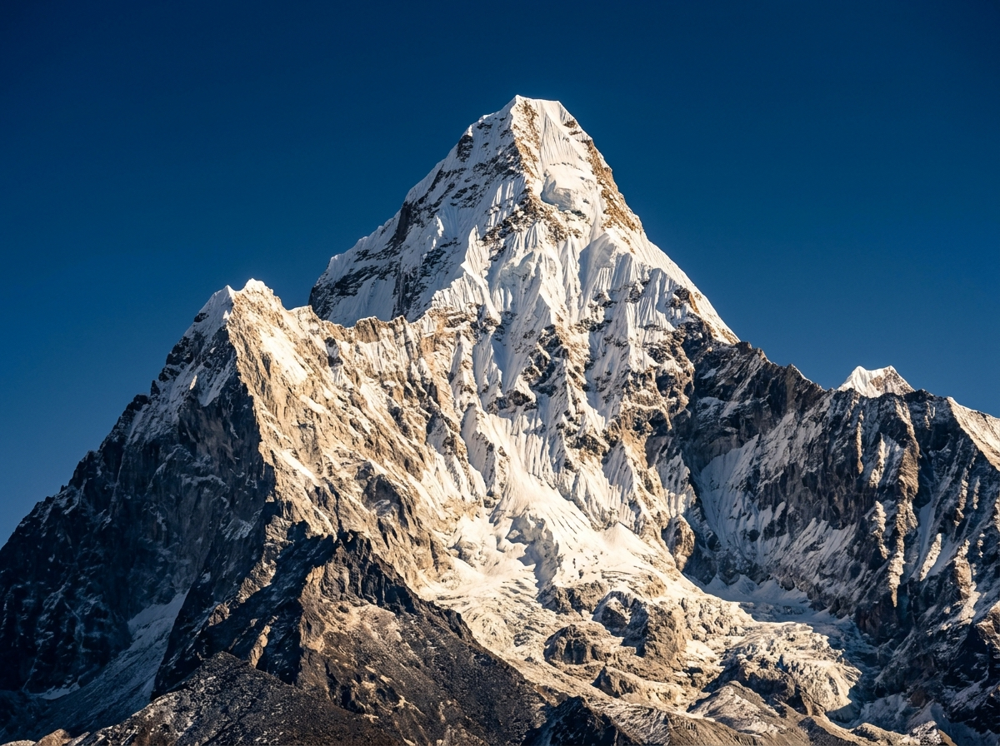
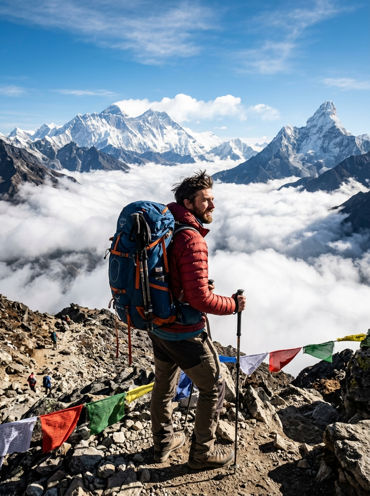
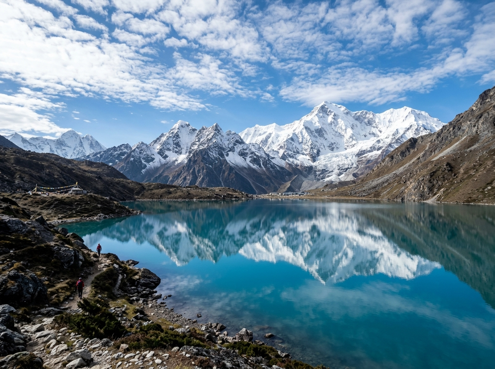
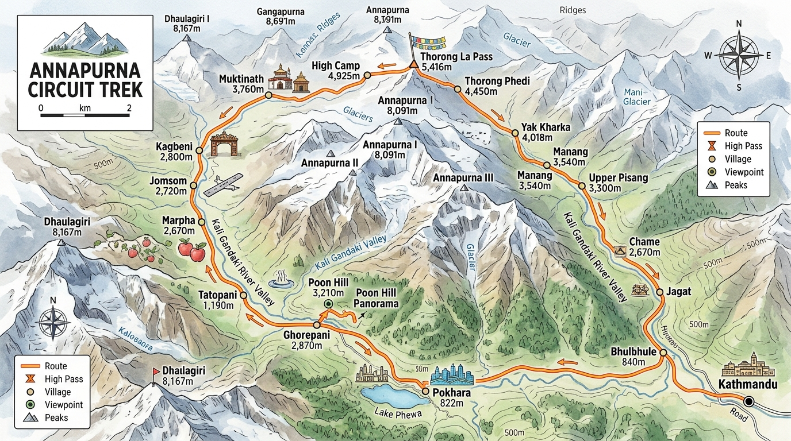
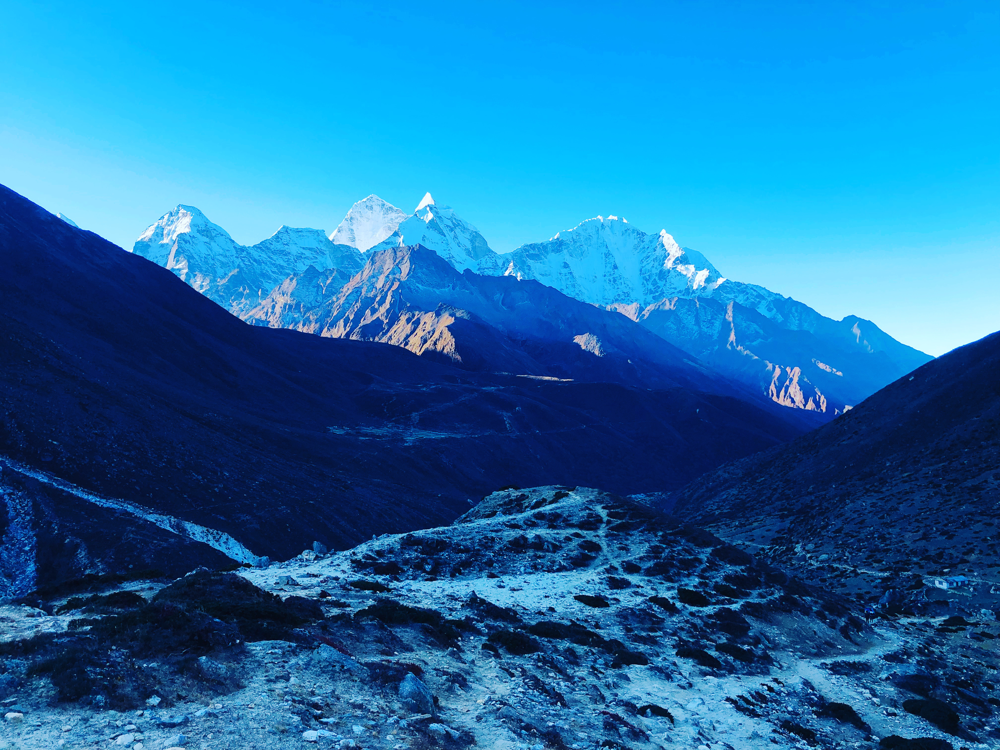
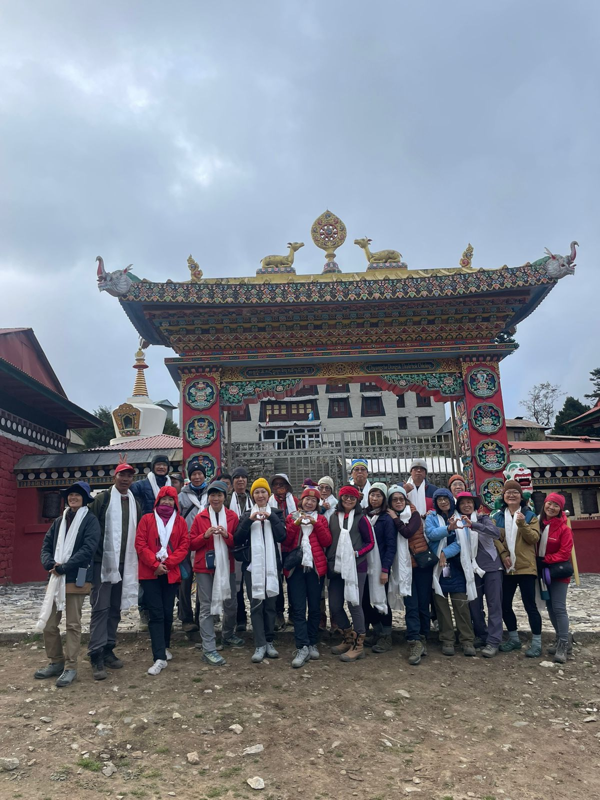
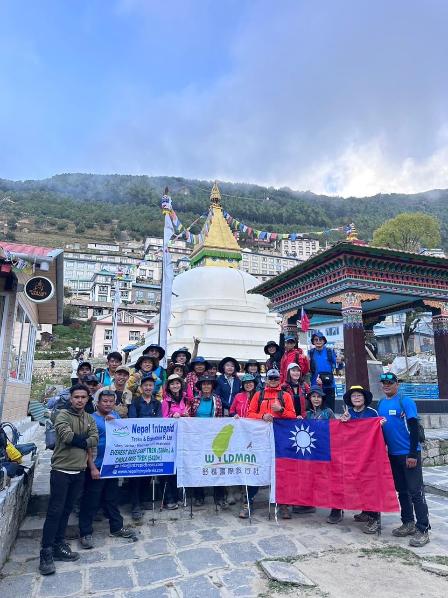
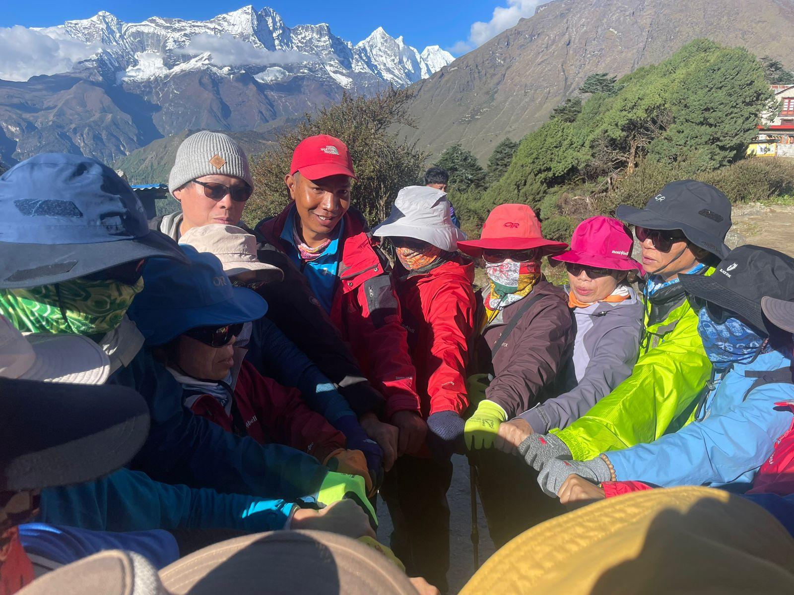
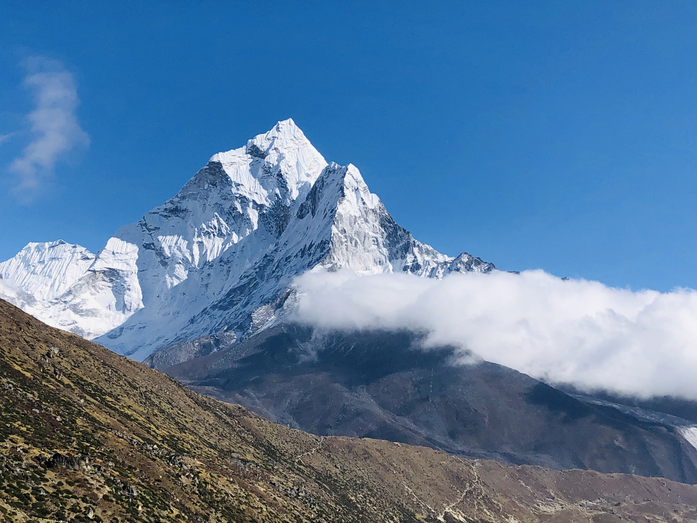
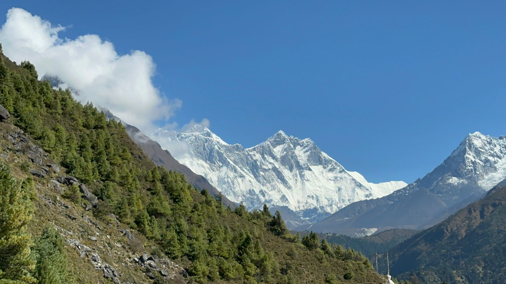

The Dhaulagiri Circuit Trek is an authentic 20-calendar-day high-altitude camping expedition in western Nepal beneath the monumental Dhaulagiri massif. Combining the rural Myagdi Valley, traditional Magar villages, expedition-supported camping, Dhaulagiri Base Camp (4,750 m), the crossing of French Pass (5,360 m), the isolated high-altitude wilderness of Hidden Valley, and the descent over Dhampus Pass (5,250 m) to the Kali Gandaki Valley, this journey is engineered for experienced mountaineers seeking true Himalayan wilderness.
This 20-calendar-day Kathmandu-to-Kathmandu expedition travels by road through Beni to Babiyachaur on Days 3–4. The main walking stages run from Day 5 through Day 17, with scheduled acclimatization rest days at Italian Base Camp on Day 11 and Dhaulagiri Base Camp on Day 14. The upper route crosses French Pass into Hidden Valley, then Dhampus Pass toward Yak Kharka and Jomsom. The planned return is a Day 18 Jomsom–Pokhara flight and Day 19 road journey to Kathmandu before Day 20 final international departure.
Unlike commercial teahouse trails, much of the upper circuit relies entirely on an organized expedition support team: licensed high-altitude Sherpa guides, cook and kitchen crew, porters, heavy-duty alpine tents, and emergency medical kits. The day plan uses Hidden Valley around 5,200 m as its highest scheduled overnight and French Pass at approximately 5,360 m as its highest daytime crossing.
20 Days Challenging Circuit



Key Trip Facts
Duration20 days
DifficultyStrenuous (Grade 5)
Max Altitude5,360 m (17,585 ft)
DestinationNepal (Dhaulagiri & Kali Gandaki)
ActivityExpedition Trekking & Camping
Group Size2–12 Trekkers
Best SeasonOct–Nov • Apr–May
AccommodationAlpine Tents & Teahouses
Govt-registered local Nepal agency
10,000+ happy mountain travellers
Local Sherpa guides & wilderness cooks
No hidden fees & guaranteed departures
Trek Overview
The Dhaulagiri Circuit Trek is a challenging high-altitude trekking expedition in western Nepal that journeys from traditional mountain settlements into remote wilderness beneath the monumental Dhaulagiri massif. This comprehensive 20-calendar-day expedition package combines the rural landscapes of the Myagdi Valley, forested river trails, self-contained expedition-style camping, Dhaulagiri Base Camp, the spectacular crossing of French Pass, the isolated environment of Hidden Valley, and the descent over Dhampus Pass toward the Kali Gandaki Valley. It is designed specifically for experienced mountaineers seeking an authentic Himalayan journey that goes far beyond conventional teahouse trekking.
The expedition follows a gradual approach from lower mountain settlements toward increasingly rugged terrain. Starting with road travel from Kathmandu to Beni and Babiyachaur, the walking route progresses through Dharapani, Muri, Boghara, Dobang, and Choriban Khola before entering the remote upper valley. As the trail climbs, established village lodges give way to supported camping, and the landscape transitions from terraced hillsides and lush sub-tropical forests to rocky moraines, glacial debris, exposed alpine camps, and high passes above 5,000 metres (16,404 ft).
One of the defining features of the journey is reaching Dhaulagiri Base Camp at approximately 4,740 to 4,750 metres (15,584 ft) directly on the Chhonbardan Glacier before crossing French Pass at approximately 5,360 metres (17,585 ft). Beyond French Pass, the route enters Hidden Valley—an extraordinary high-altitude wilderness basin around 5,000 to 5,200 metres (16,404 to 17,060 ft) where full expedition camping support is mandatory. The circuit then crosses Dhampus Pass (5,200 to 5,250 metres) before descending to Yak Kharka and Jomsom.
Unlike routes where lodge accommodation is readily available each evening, much of the upper Dhaulagiri Circuit depends entirely on an organized expedition support team. Licensed high-altitude guides, porters, a professional cook and kitchen crew, expedition mountain tents, food supplies, and safety monitoring equipment are essential components. The planned return is a Day 18 scenic mountain flight from Jomsom to Pokhara and a Day 19 road journey to Kathmandu before final Day 20 international departure.
Dhaulagiri Circuit Trek at a Glance
Expedition Specifications
Trek Name
Dhaulagiri Circuit Trek (Expedition High Pass Circuit)
Total Duration
20 Calendar Days (Kathmandu to Kathmandu)
Walking Stages
13 Active Walking Days + 2 Mandatory Acclimatization Days
Highest Point
French Pass: 5,360 m (17,585 ft)
Highest Sleeping Altitude
Hidden Valley Camp: ~5,000 to 5,200 m (16,404 to 17,060 ft)
Second High Pass
Dhampus Pass: ~5,200 to 5,250 m (17,060 to 17,224 ft)
Major Landmarks
Dhaulagiri Base Camp (4,750 m), Italian Base Camp (3,660 m), French Pass, Hidden Valley, Dhampus Pass
Trek Difficulty
Strenuous / Grade 5 (Glacier traverses & consecutive days above 4,000 m)
Medical oxygen cylinder, twice-daily pulse oximeter monitoring, comprehensive trauma first aid kit
Best Seasons
Autumn (September to November) & Spring (March to May)
Flight Inclusions
Jomsom to Pokhara scheduled domestic flight (Day 18) included
Prior Experience
Strongly recommended: previous high-altitude multi-day trekking above 4,000–4,500 m
What Makes the Dhaulagiri Circuit Trek Special?
Dhaulagiri Massif Panorama
Dhaulagiri I rises to 8,167 m (26,795 ft), the world's 7th highest mountain. Unlike single-viewpoint treks, this circuit circumnavigates the entire massif, offering constantly shifting perspectives of ice walls, hanging glaciers, and surrounding 7,000 m giants.
Two Passes Above 5,200 m
Cross French Pass (5,360 m / 17,585 ft) and Dhampus Pass (5,250 m / 17,224 ft). Reaching the crest reveals an immense ocean of peaks stretching into the Tibetan plateau, Mustang, and the Annapurnas across the Kali Gandaki.
True Expedition Camping
Experience true alpine expedition living for over a week at high camps: Italian Base Camp, Glacier Camp, Dhaulagiri Base Camp, and Hidden Valley. Fully self-contained with our Sherpa guides, kitchen crew, dining tent, and warm meals.
Pristine Wilderness Solitude
Free from teahouse commercialism and crowds. The trails of the upper Myagdi and Hidden Valley remain pristine, quiet, and wild—offering rare solitude and deep connection with the greatest mountain heights on Earth.
Dhaulagiri Circuit Trek Highlights
The Dhaulagiri Circuit Trek brings together some of the most dramatic landscapes and demanding trekking experiences in western Nepal. The journey leads from the inhabited valleys of the Myagdi region into remote mountain terrain beneath the Dhaulagiri massif, with several days of expedition camping, a visit to Dhaulagiri Base Camp, a crossing of French Pass, an overnight stay in Hidden Valley, and a second high-pass crossing over Dhampus Pass. The route then descends toward the Kali Gandaki Valley, creating a varied trekking experience that combines natural scenery, cultural landscapes, and the physical challenge of crossing high Himalayan terrain.
Unlike a trek focused on a single base camp or viewpoint, the Dhaulagiri Circuit develops gradually over multiple stages. The following highlights explain what makes the Dhaulagiri Circuit Trek distinctive and what travelers can expect from its principal destinations, while recognizing that weather, visibility, trail conditions, and the expedition leader's decisions can affect the actual experience.
Mount Dhaulagiri and its Himalayan mountain panorama
Mount Dhaulagiri is the defining landmark of this trekking expedition. Dhaulagiri I rises to approximately 8,167 metres above sea level, making it the 7th highest mountain in the world and one of Nepal's most prominent Himalayan peaks. The surrounding massif dominates the landscape across much of the upper route, creating a dramatic setting for the journey toward base camp and the two high passes. As the route enters the higher valleys, the surroundings become more open, and the Dhaulagiri wall becomes increasingly central to the experience. Depending on the section of the route and visibility, you can view:
Dhaulagiri I 8,167 m
Dhaulagiri II 7,751 m
Dhaulagiri III 7,715 m
Dhaulagiri IV 7,661 m
Dhaulagiri V 7,618 m
Gurja Himal 7,193 m
Tukuche Peak 6,920 m
Sita Chuchura 6,611 m
Nilgiri 7,061 m
Annapurna I 8,091 m
The attraction is not limited to seeing the mountain from one viewpoint. The approach takes trekkers through different elevations and landscapes, allowing the character of the massif to change from dense forest to glaciated cirques as the journey progresses.
Stand at Dhaulagiri Base Camp at 4,750 m
Dhaulagiri Base Camp, at approximately 4,740 to 4,750 metres, is one of the central highlights of the circuit. Reaching the camp marks a major milestone after several days of trekking through the Myagdi Valley and progressing into higher mountain terrain. The destination is surrounded by an imposing landscape of rock, glacier-related features, snow, and towering Himalayan peaks. The high camp on the active Chhonbardan Glacier offers rare close perspectives on vertical rock faces, hanging seracs, and massive icefalls. The itinerary includes dedicated time for acclimatization and recovery here before the high-pass section, allowing the guide to monitor the group's condition and review the forthcoming route.
Cross French Pass, the apex of the circuit at 5,360 m
French Pass is the highest point of the standard itinerary at approximately 5,360 metres (17,585 ft) and one of its most physically demanding sections. The crossing begins from Dhaulagiri Base Camp and involves moving over glacier terrain, rocky moraine, and snowfields. Reaching the pass requires stamina, steady footwork, and favorable weather. From the prayer-flag-draped summit, a magnificent panorama opens across Dhaulagiri I, Tukuche Peak, Sita Chuchura, and into the stark expanse of Hidden Valley. The pass forms the crucial link between the glaciated base-camp area and the remote wilderness beyond.
Camp in Hidden Valley, an isolated alpine basin at 5,200 m
Hidden Valley is one of the most distinctive highlights of the circuit because of its remoteness, high altitude, and position between the two passes. Located around 5,000 to 5,200 metres, the surroundings are stark, wind-carved, and completely uninhabited with zero permanent settlements or teahouses. Camping here under pristine Himalayan starlight provides an authentic expedition experience. The overnight stay requires careful preparation for sub-zero temperatures and wind exposure, offering an unforgettable encounter with true mountain isolation before continuing to Dhampus Pass.
Cross Dhampus Pass and descend toward the Kali Gandaki
Dhampus Pass (commonly reported around 5,200 to 5,250 metres) completes the second high crossing and marks the transition from the remote expedition section toward the Kali Gandaki Valley. From the crest, the views open dramatically toward the Annapurna massif and Nilgiri peaks across the world's deepest gorge. The descent from Dhampus Pass involves a long drop of over 1,550 vertical metres toward Yak Kharka (3,680 m), requiring sensible pacing and trekking poles as the terrain shifts from snow and rock into alpine pastures.
Walk through traditional Magar villages and terraced hills
The lower approach through the Myagdi Valley—passing Babiyachaur, Dharapani, Muri, Boghara, and Dobang—offers a rich cultural and geographical contrast to the remote high camps. Walking through these areas provides an opportunity to observe traditional rural life, terraced crop fields, suspension bridges over roaring rivers, and authentic Magar hill architecture. The gradual progression allows your walking rhythm to build naturally while experiencing warm local hospitality before transitioning into full wilderness camping.
Experience Marpha, Jomsom, and ancient Thakali culture
Descending into the Kali Gandaki Valley introduces a completely different cultural landscape. Marpha is one of the most celebrated villages in the Annapurna and Mustang regions, famed for its clean stone-paved alleys, whitewashed buildings, Tibetan Buddhist chortens, and apple orchards. After several days of expedition camping in the high mountains, arriving in settled villages with hot meals, local bakeries, and Thakali hospitality is an immense physical and cultural reward before boarding the flight from Jomsom to Pokhara.
Experience supported expedition camping with our Sherpa crew
Expedition camping is a defining feature of the Dhaulagiri Circuit Trek. While the lower approach uses village accommodation, the upper route depends on organized camps because conventional lodges are not available in the high mountain sections. A dedicated support team—including licensed high-altitude Sherpa guides, cooks, kitchen staff, and porters—carries 4-season alpine tents, kitchen equipment, fresh food, and emergency supplies, ensuring hot meals and safe shelter throughout the wild crossing.
Trek through diverse eco-zones from forests to alpine glaciers
One of the most rewarding aspects of the Dhaulagiri Circuit is its dramatic ecological progression. The route starts in subtropical farmland and deep bamboo river gorges, climbs through temperate oak and blooming rhododendron forests, passes into alpine birch and juniper zones, and ultimately reaches the barren realm of lateral moraines, active glaciers, and high-altitude scree. You watch the living geography of the Himalayas transform with every 500 meters of elevation gained.
Complete a world-class wilderness circuit safely as a team
The Dhaulagiri Circuit is an authentic, demanding Himalayan expedition where safety, preparation, and teamwork take priority over rigid schedules. Every trek is led by government-certified high-altitude Sherpa guides equipped with medical oxygen, pulse oximeters, portable altitude chambers (PAC bag), and satellite communications. With well-planned rest days at Italian Base Camp and Dhaulagiri Base Camp, continuous health monitoring, and a professional wilderness crew, our trekkers cross French Pass and Dhampus Pass with confidence, safety, and camaraderie.
Dhaulagiri Circuit Highlights at a Glance
Mount Dhaulagiri Massif (8,167 m): Complete encirclement of the world's 7th highest peak with panoramic views of Dhaulagiri I–V and Gurja Himal.
Dhaulagiri Base Camp (4,750 m): High-altitude expedition staging camp set directly on the active Chhonbardan Glacier.
French Pass Summit (5,360 m): Demanding alpine crossing between the glaciated Myagdi drainage and Hidden Valley.
Dhampus Pass (5,250 m): Second high pass with sweeping panoramas of Annapurna I, Nilgiri, and the Kali Gandaki Valley.
Traditional Magar Villages: Agrarian cultural approach through Babiyachaur, Dharapani, Muri, Boghara, and Dobang.
Marpha & Thakali Heritage: Historic whitewashed stone village, apple orchards, and Samtenling Gompa in Lower Mustang.
Supported Wilderness Expedition: Full alpine camp operations with dedicated Sherpa guides, cooks, tents, and medical oxygen.
Who is the Dhaulagiri Circuit Trek Designed For?
The 20-day Dhaulagiri Circuit is a serious expedition demanding high physical conditioning, wilderness adaptability, and mental resilience:
Experienced High-Altitude Trekkers
Trekkers who have previously completed routes above 4,000–4,500 m (such as Everest Base Camp, Annapurna Circuit, or Manaslu) and understand pacing, layering, and altitude physiology.
Wilderness Camping Enthusiasts
Hikers who enjoy sleeping in high alpine tents, experiencing sub-zero nights, and adapting to basic camp infrastructure away from commercial teahouses.
Endurance Athletes & Climbers
Trekkers with strong cardiovascular stamina capable of sustained 6 to 9-hour mountain walking days on uneven moraine, scree, and snow.
Off-the-Beaten-Track Explorers
Adventurers seeking complete isolation, wild Himalayan valleys, pristine rivers, and genuine peace far away from busy commercial trekking trails.
Mountain Photographers
Photographers looking for dramatic, untamed Himalayan landscapes, towering icefalls, high passes, and unpolluted night skies in Hidden Valley.
Who It Is Not Recommended For
Not suitable for complete beginners, those requiring luxury lodge amenities, or individuals unable to handle cold camping conditions (-15°C to -20°C).
Expedition Assurance
Why Book the Dhaulagiri Circuit Trek with Namaste Hiking Trek?
With over 15,000 travelers guided across Nepal's mountains, Namaste Hiking Trek combines rigorous wilderness safety standards with elite local Sherpa heritage:
Elite Sherpa LeadershipGovernment-licensed, high-altitude Sherpa guides certified in Wilderness First Aid with extensive multi-pass expedition leadership.
Certified Safety ProtocolsTwice-daily pulse oximetry checks, medical oxygen cylinder carried at all times, emergency satellite phone, and 24/7 Kathmandu operations room support.
Ethical Porter WelfareStrict compliance with IPPG guidelines: fair living wages, 20 kg load limit per porter, warm high-altitude clothing, insulated tents, and emergency insurance.
Transparent Tiered PricingGuaranteed departures, all ACAP & TIMS permits included, private 4WD transportation, Jomsom-Pokhara flight included, and zero hidden checkout fees.
Dhaulagiri Circuit Trek Itinerary: Day by Day Details
Our 20-calendar-day Dhaulagiri Circuit Trek itinerary is built around a gradual, expedition-supported approach to high altitude rather than an accelerated race around the massif. Starting with an overland approach through Beni and Babiyachaur into the lush Myagdi Valley, the route progresses along traditional Magar trails, ascends through remote alpine gorges to Italian Base Camp (3,660 m / 12,008 ft), negotiates the active Chhonbardan Glacier to Dhaulagiri Base Camp (4,750 m / 15,584 ft), crosses the panoramic French Pass (5,360 m / 17,585 ft) into high-altitude Hidden Valley (5,200 m / 17,060 ft), and traverses Dhampus Pass (5,250 m / 17,224 ft) before descending into the Kali Gandaki Valley at Jomsom.
The itinerary features 13 dedicated walking stages (Days 5 to 17) accompanied by full expedition camping support, two mandatory acclimatization rest days at Italian Base Camp and Dhaulagiri Base Camp, road transfers from Kathmandu to the Myagdi trailhead, a scenic mountain flight from Jomsom to Pokhara, and return travel to Kathmandu.
Unlike standard teahouse routes, upper Dhaulagiri requires a complete, self-sustained expedition infrastructure. Professional high-altitude mountain guides, cooks, kitchen staff, and porters transport all 4-season alpine camping gear, dining tents, kitchen equipment, fresh food supplies, and safety reserves across the high passes.
Before Your Dhaulagiri Circuit Trek Starts
The start date you select is your arrival date in Kathmandu. Your actual expedition preparation and mandatory gear check take place on Day 2 in Kathmandu before departing overland toward Beni and the Myagdi Valley on Day 3.
During your pre-trek briefing in Kathmandu, your expedition leader reviews the day-by-day staging, high-pass weather forecasts, acclimatization protocol, and camping routines. Our gear specialists inspect all mandatory alpine equipment—including high-altitude mountaineering boots, crampons or microspikes, -20°C sleeping bag, insulated down parka, glacier glasses (Category 4 UV), and waterproof shell layers. Any missing items must be procured or rented in Kathmandu before departure, as no equipment shops exist after leaving Beni.
Because upper Dhaulagiri traverses completely uninhabited glacial moraine and high-altitude alpine zones with zero teahouse infrastructure between Dobang and Marpha, our crew transports complete expedition camping gear, heavy-duty 4-season alpine tents, mess and kitchen tents, kitchen equipment, fresh produce, and high-calorie expedition rations.
We strongly recommend booking travel insurance that explicitly covers high-altitude search, medical treatment, and emergency helicopter evacuation up to 6,000 meters elevation. Additionally, scheduling 2–3 contingency days in Nepal following the trek is highly recommended to protect against weather delays affecting the Jomsom–Pokhara mountain flight.
Total Days20 Calendar Days
WALKING STAGES13 Walking Days (Days 5–17)
MAX ELEVATION5,360 m (French Pass)
ACCLIMATIZATION2 Scheduled Days (3,660m & 4,750m)
Itinerary at a Glance
Days 1 to 20
Day
Scheduled Overnight
Sleeping Elevation
Daytime Activity / Staging
Day 1–2
Kathmandu
1,355 m (4,445 ft)
Arrival, trek briefing, permit checks, and valley sightseeing
Day 3
Beni
836 m (2,743 ft)
Scenic overland drive via Prithvi Highway (7–9 hrs)
Day 4
Babiyachaur
970 m (3,182 ft)
Road transfer into Myagdi Valley; walking starts Day 5
Day 5
Dharapani (Myagdi)
1,560 m (5,118 ft)
Trek starts: village paths and terraced valley hillsides (5–6 hrs)
Day 6
Muri
1,850 m (6,070 ft)
Magar village approach; first views of Dhaulagiri I (5–6 hrs)
Day 7
Boghara
2,080 m (6,824 ft)
Stone staircase climbs and canyon trail undulations (6–7 hrs)
Day 8
Dobang
2,520 m (8,268 ft)
Bamboo and rhododendron gorge; final teahouse transition (6–7 hrs)
Day 9
Choriban Khola
3,110 m (10,203 ft)
Transition to full expedition-supported tented camping (5 hrs)
Day 10
Italian Base Camp
3,660 m (12,008 ft)
Ascent into alpine amphitheater beneath Dhaulagiri west face (5–6 hrs)
Day 11
Italian Base Camp
3,660 m (12,008 ft)
Mandatory Acclimatization & Rest Day (active ridge hike)
Day 12
Glacier Camp
4,200 m (13,780 ft)
Chhonbardan Glacier moraine traverse and rock navigation (5–6 hrs)
Day 13
Dhaulagiri Base Camp
4,750 m (15,584 ft)
Glacier spine climb into high base camp beneath Dhaulagiri I (4–5 hrs)
Day 14
Dhaulagiri Base Camp
4,750 m (15,584 ft)
Mandatory Acclimatization & French Pass Preparation Day
Day 15
Hidden Valley
5,200 m (17,060 ft)
Cross French Pass (5,360 m / 17,585 ft) into high basin (7–8+ hrs)
Day 16
Yak Kharka
3,680 m (12,073 ft)
Cross Dhampus Pass (5,250 m) and descend 1,570 m (7–8+ hrs)
Day 17
Jomsom
2,720 m (8,924 ft)
Descent to Kali Gandaki Valley; visit Marpha & hotel celebration (6–7 hrs)
Day 18
Pokhara
822 m (2,697 ft)
Scenic mountain flight over Kali Gandaki Gorge; lakeside hotel
Day 19
Kathmandu
1,355 m (4,445 ft)
Overland drive back to capital (6–8 hrs); farewell cultural dinner
Day 20
Departure
Homebound
Private hotel-to-airport transfer according to international flight
Day 1: Arrival at Tribhuvan International Airport in Kathmandu
Kathmandu – approximately 1,355 m / 4,445 ft
Duration / Timing: 20 to 40 minutes private airport transfer
Distance / Staging: Airport to Thamel Hotel (6–8 km)
Your Dhaulagiri Circuit Trek begins with your arrival at Tribhuvan International Airport in Kathmandu. After completing airport formalities, you will meet the designated representative and transfer to your hotel. The drive generally takes around 20 to 40 minutes, depending on traffic and the hotel's location.
Once you have checked in, the remainder of the day is available for resting after international travel. Depending on your arrival time and energy level, you may explore the surrounding neighborhood, visit nearby shops, or enjoy a meal at a local restaurant. Keeping the schedule relaxed is advisable because the coming days involve equipment preparation, road travel, and a demanding mountain itinerary.
Kathmandu is the main preparation point for the expedition. Before entering the Dhaulagiri region, you will need to confirm your trekking equipment, personal medication, travel insurance, passport details, and the arrangements for the guide and expedition crew.
Use the arrival day to identify any missing personal items and inform the trip coordinator if your luggage has been delayed. Important equipment should be organized before departure from Kathmandu because replacement options become limited after you enter the remote trekking region.
The guide or trip coordinator will confirm the meeting time for the following day and explain the initial arrangements. Keep your passport, insurance documents, emergency contact information, and essential medication in a secure and accessible place.
The first day focuses on arrival and recovery rather than strenuous activity. Getting sufficient rest helps you begin the expedition in a better condition for the preparation and travel stages ahead.
Day 2: Kathmandu Valley Sightseeing & Expedition Gear Preparation
Kathmandu – approximately 1,355 m / 4,445 ft
Duration / Timing: Full day cultural sightseeing & gear staging
Distance / Staging: City transit & gear inspection
Accommodation: 3-Star Boutique Hotel in Thamel
Daytime Activity: UNESCO Heritage site exploration, gear check & ACAP/TIMS permit verification
Meals: Breakfast included
Overnight: Kathmandu (1,355 m)
The second day combines preparation for the Dhaulagiri expedition with an opportunity to explore selected cultural and heritage sites in the Kathmandu Valley. The sightseeing program depends on the available time, traffic, and the amount of preparation required before departure.
After breakfast, you may visit heritage locations that introduce Nepal's religious architecture, traditional urban settlements, and cultural history. Possible stops include selected historic squares, Buddhist stupas, or Hindu temple complexes. The final selection should be confirmed according to the operating schedule rather than assuming that every major attraction can be visited in one day.
The remainder of the day is important for final expedition preparation. Review the 20-day itinerary, confirm the transportation arrangements, and check that you have suitable trekking boots, warm clothing, waterproof layers, a headlamp, a sleeping bag if required, and other personal equipment. Verify which tents, sleeping mats, and camping supplies are provided by the package.
Your guide or trip coordinator should also explain the expedition's practical arrangements, including the baggage allowance, porters, cook and kitchen crew, camping routines, and how meals will be handled in the remote sections. This is the time to clarify which expenses are included and which remain your responsibility.
Travel insurance requires particular attention because the itinerary reaches elevations above 5,000 m. Confirm that your policy covers the intended trekking activity and maximum elevation, along with appropriate emergency medical and evacuation benefits.
Review the symptoms of altitude-related illness and understand how to communicate health concerns to the guide. Although the lower approach provides some time to establish a walking routine, it does not eliminate the risks associated with the high camps and mountain passes.
Finish the day by organizing your luggage and preparing for the drive toward Beni. Keep essentials accessible and avoid carrying unnecessary items into the mountains.
Day 3: Drive from Kathmandu to Beni via Prithvi Highway
Beni – approximately 836 m / 2,743 ft
Duration / Timing: Approximately 7 to 9 hours scenic drive
Distance / Staging: 285 km overland journey
Accommodation: Hotel or Guesthouse in Beni
Daytime Activity: Scenic highway drive along Trishuli and Kali Gandaki river valleys
Meals: Breakfast, Lunch & Dinner included
Overnight: Beni (836 m)
After breakfast, begin the overland journey from Kathmandu toward Beni, an important gateway to the Dhaulagiri trekking region. The drive commonly takes around 7 to 9 hours or longer, depending on traffic, construction, weather, and the condition of the road.
The journey follows Nepal's middle hills and river valleys, passing towns, agricultural areas, and rural settlements. As you travel westward, the landscape gradually changes from the busy Kathmandu Valley toward the mountainous surroundings of the Myagdi region.
Road travel takes up a substantial part of the day, so it is sensible to carry drinking water, personal snacks, and any essential medication where they are easily accessible. Stops for meals and refreshments depend on the driver, route, traffic, and travel schedule.
Beni is an important transportation and supply point for journeys into the Myagdi Valley. Reaching the town brings you closer to the trekking region, although the route still includes further road access and several walking stages before the expedition reaches the upper Dhaulagiri camps.
After arriving, settle into your accommodation and check the equipment you will need for the following days. Confirm the next morning's departure arrangement and clarify whether the journey to Babiyachaur will be completed by vehicle under the planned itinerary.
The road journey can be affected by temporary disruptions. If travel takes longer than expected, the group should follow the revised arrangements rather than trying to compensate by rushing the next stage.
Beni provides the first practical transition from city travel toward the expedition. Use the evening to rest, eat adequately, and ensure that your personal belongings are organized for the upcoming road and trekking stages.
Day 4: Drive from Beni to Babiyachaur
Babiyachaur – approximately 970 m / 3,182 ft
Duration / Timing: Approximately 2 to 3 hours road transfer
Distance / Staging: 24 km along Myagdi river road
Accommodation: Local Lodge / Guesthouse in Babiyachaur
Daytime Activity: 4WD road transfer into Myagdi Valley; final roadhead staging
Meals: Breakfast, Lunch & Dinner included
Overnight: Babiyachaur (970 m)
Today's journey continues from Beni toward Babiyachaur, following the road network into the Myagdi Valley. This stage provides further access to the trekking region and helps position the group for the walking route beginning the following day.
The drive passes through rural settlements and cultivated landscapes, with views of the surrounding hills and river valleys. Road quality may vary, and journey times depend on the selected vehicle, weather, traffic, and current access conditions. The exact drop-off point should be confirmed before departure because rural road access may change with maintenance or seasonal disruption.
Although the journey is shorter than the drive from Kathmandu, it is still important to allow adequate time for the transfer and any stops required along the way. Travelers should keep their daypacks and essential belongings separate from the main luggage so that important items remain accessible.
Babiyachaur is part of the lower Myagdi Valley approach to the Dhaulagiri Circuit. From this area, the itinerary transitions toward walking through mountain villages and increasingly rugged terrain. The road approach helps reduce the distance covered on foot before the group begins the sustained trekking stages.
After arrival, take time to organize trekking equipment, check your footwear, and prepare clothing appropriate for the next day's conditions. Review the daypack essentials, including water, snacks, waterproof layers, a warm layer, personal medication, and sun protection.
The guide will explain the following day's route and estimated walking duration. This is a good opportunity to clarify the baggage arrangements and the responsibilities of the support team before the expedition begins in earnest.
The overnight stay in Babiyachaur provides a practical staging point for the transition from road travel to walking in the Myagdi Valley.
Dharapani here is the Myagdi approach settlement, not the same-named Annapurna Circuit stop. Confirm the actual trailhead and connected route rather than substituting an alternative road-access point into this schedule.
Day 5: Trek from Babiyachaur to Dharapani (Myagdi)
Dharapani – approximately 1,560 m / 5,118 ft
Duration / Timing: Approximately 5 to 6 hours walking
Distance / Staging: Approximately 10 km
Accommodation: Guesthouse / Local Lodge in Dharapani
Daytime Activity: Foot trekking commences through terraced hillsides and rural villages
Meals: Breakfast, Lunch & Dinner included
Overnight: Dharapani (1,560 m)
The main trekking section begins as you leave Babiyachaur and walk toward Dharapani. Today's route moves through the lower Myagdi Valley, with village paths, cultivated slopes, rural settlements, and sections of uneven trail forming part of the journey.
The walking day introduces the rhythm of the expedition. You will begin managing regular breaks, carrying your daypack, and maintaining a sustainable pace over several hours. Although the elevation remains relatively low compared with the upper camps, the trail can include both uphill and downhill sections.
The route provides opportunities to observe the agricultural landscape and everyday life of the communities along the valley. Terraced fields and scattered houses are features of the rural setting, while the surrounding hills gradually become more prominent as you move farther into the region.
Your guide will help establish an appropriate walking pace and indicate where to take breaks. Avoid rushing during the first trekking day, especially if you have recently completed a long road journey. A comfortable pace makes it easier to maintain energy across the following stages.
The exact duration and distance depend on the trail used and current conditions. The group should allow time for meals, rest stops, and any slower sections caused by weather or uneven ground.
After reaching Dharapani, settle into the planned accommodation and take time to recover. Check your feet for rubbing or blisters, refill your water bottles, and make sure your rain protection and warm clothing remain accessible.
This stage is an important introduction to walking in the Myagdi Valley, preparing you for the longer ascents and more remote sections ahead.
Day 6: Trek from Dharapani to Muri
Muri – approximately 1,850 m / 6,070 ft
Duration / Timing: Approximately 5 to 6 hours walking
Distance / Staging: Approximately 12 km
Accommodation: Guesthouse / Local Lodge in Muri
Daytime Activity: Ascent through traditional Magar villages; first panoramic glimpse of Dhaulagiri I
Meals: Breakfast, Lunch & Dinner included
Overnight: Muri (1,850 m)
After breakfast, continue toward Muri along village trails and hillside paths in the Myagdi Valley. This stage gradually increases the trekking challenge through a combination of ascents, descents, and uneven terrain.
The surrounding landscape may include cultivated terraces, forested slopes, small settlements, and views across the valley when visibility permits. The route follows the terrain rather than a perfectly level path, so your walking speed will vary with the gradient and trail surface.
Muri is a notable settlement along the approach to the Dhaulagiri region. It offers another opportunity to experience the rural mountain environment before the route moves farther into areas where regular facilities are more limited.
As you walk, focus on steady progress rather than maintaining a fast pace. Take appropriate breaks, drink regularly, and address any discomfort with your boots or backpack early. These small measures become increasingly important as the trek progresses into more demanding terrain.
The elevation at Muri is approximately 1,850 m, although exact values vary by location and map source. At this stage, altitude itself is not usually the main challenge for a prepared walker; the cumulative walking effort and changes in trail elevation are more relevant.
Upon arrival, take time to eat and rest. Review the next day's stage toward Boghara, including its expected duration and terrain. Organize your daypack and check that essential items are accessible rather than packed in luggage carried separately.
The walk to Muri continues the gradual transition from the lower valley into the Dhaulagiri region, allowing the group to develop a consistent trekking rhythm before the more remote stages begin.
Day 7: Trek from Muri to Boghara
Boghara – approximately 2,080 m / 6,824 ft
Duration / Timing: Approximately 6 to 7 hours walking
Distance / Staging: Approximately 12 km
Accommodation: Guesthouse / Local Lodge in Boghara
Daytime Activity: Stone staircase ascents, forested river gorges and suspension bridge crossings
Meals: Breakfast, Lunch & Dinner included
Overnight: Boghara (2,080 m)
Today's route continues from Muri toward Boghara, taking you farther along the mountain trails of the Myagdi Valley. The walk combines sustained uphill sections, descents, and uneven paths through a landscape of hillsides, vegetation, and rural settlements.
The route requires a measured pace because the terrain can become more demanding than the lower approach. Stone steps and narrow paths may appear in some sections, and the trail's condition can vary with recent rain, seasonal changes, and local maintenance.
As you move toward Boghara, the route becomes more remote and the organization of overnight accommodation and supplies takes on greater importance. The group is gradually approaching the area where permanent facilities become less dependable and expedition camping becomes a more significant part of the plan.
The guide will help coordinate the day's progress and identify appropriate rest points. Use breaks to drink water, eat snacks, and check that your clothing is comfortable. On a multi-day trek, conserving energy is often more effective than walking quickly and becoming exhausted early.
Boghara provides a stopping point before the route continues toward Dobang and the more isolated upper valley. When you arrive, confirm the next day's departure time and understand the planned accommodation arrangements.
You should also make sure that your headlamp, waterproof clothing, warm layer, and personal medication are easy to reach. As the group moves higher, the environment becomes less convenient for obtaining replacement equipment or additional supplies.
This stage contributes to the progressive nature of the Dhaulagiri Circuit. You are still moving through inhabited terrain, but the route is gradually leading toward the more remote mountain sections that define the expedition.
Day 8: Trek from Boghara to Dobang
Dobang – approximately 2,520 m / 8,268 ft
Duration / Timing: Approximately 6 to 7 hours walking
Distance / Staging: Approximately 13 km
Accommodation: Local Lodge / Supported Wilderness Camp in Dobang
Daytime Activity: Dense bamboo and rhododendron forest ascent; final village-lodge transition
Meals: Breakfast, Lunch & Dinner included
Overnight: Dobang (2,520 m)
After breakfast, continue toward Dobang through increasingly remote terrain in the Myagdi Valley. The route may include forested paths, steep hillside sections, uneven ground, and further elevation gain.
This stage is an important transition toward the upper Dhaulagiri region. The trail moves farther away from the larger settlements, and services become more limited. Depending on the final operating plan, Dobang may be among the last stops where village-style accommodation is available before the group relies more heavily on camping.
Walking conditions depend on the route, weather, and trail maintenance. Some sections may feel slow because of uneven ground or repeated changes in gradient. Maintain a steady pace and pay attention during descents, when tired legs can affect balance.
The surrounding vegetation and landscape continue to change as the elevation increases. The day is less about reaching a particular viewpoint and more about steadily progressing toward the remote upper valley while managing the physical demands of consecutive trekking days.
On arrival at Dobang, review the upcoming camping stages with the guide or expedition leader. Confirm how the crew will manage the equipment and food supplies required farther up the route, and make sure your personal daypack contains the items you will need during the walk.
Take time to check footwear and adjust any areas of discomfort. Blisters and poorly fitting equipment can become increasingly problematic once the group enters remote terrain, where replacement supplies may not be readily available.
The evening should focus on rest, sufficient food, hydration, and preparation for the following stage toward Choriban Khola.
Day 9: Trek from Dobang to Choriban Khola
Choriban Khola – approximately 3,110 m / 10,203 ft
Duration / Timing: Approximately 5 hours walking
Distance / Staging: Approximately 10 km
Accommodation: Supported Alpine Tented Camp at Choriban Khola
Daytime Activity: Ascent into upper Myagdi gorge; transition to full expedition-supported camping
The expedition continues into higher mountain terrain as you walk from Dobang toward Choriban Khola. The elevation gain marks a more noticeable transition from the lower valley into the environment of the upper Dhaulagiri route.
The trail passes through increasingly remote surroundings, with changing vegetation and sections of uneven ground. Depending on the route, you may encounter forested paths, rocky sections, steep gradients, and terrain where progress is slower than expected.
As the overnight elevation approaches 3,100 m, it is important to pay closer attention to your physical condition. Walking at a steady pace, eating adequately, and drinking regularly can help manage the exertion, but they do not eliminate the risk of altitude-related illness.
Inform the guide promptly if you develop a headache, nausea, dizziness, unusual fatigue, or other symptoms that may indicate a health problem. Do not continue ascending if symptoms suggest altitude illness until the situation has been assessed appropriately.
Choriban Khola is part of the transition toward remote camping. The accommodation and facilities may be simpler than those in the lower villages, and arrangements depend on the actual operating route and campsite.
After reaching camp, allow time to recover and prepare for the ascent toward Italian Base Camp. Make sure your warm layers, waterproof clothing, headlamp, and sleeping equipment are ready for the next stage. The group should also review the route, estimated duration, and current weather conditions before continuing.
This is a key day in the gradual approach to higher elevation. A conservative pace and attention to individual health are important as the itinerary moves into more demanding terrain.
The printed Choriban Khola ~3,110 m → Italian Base Camp ~3,660 m stage gains about 550 m in sleeping elevation. Review this with the actual camp locations and the group’s response to altitude; a subsequent rest day does not make every preceding gain appropriate for every traveler.
Day 10: Trek from Choriban Khola to Italian Base Camp
Italian Base Camp – approximately 3,660 m / 12,008 ft
Duration / Timing: Approximately 5 to 6 hours walking
Distance / Staging: Approximately 12 km
Accommodation: Supported Alpine Tented Camp at Italian Base Camp
Daytime Activity: Ascent into high alpine amphitheater directly beneath Dhaulagiri West Face
Today's trek continues toward Italian Base Camp, one of the main staging points before the upper Dhaulagiri camps. The route gains elevation and moves into a more exposed mountain environment where views of the surrounding peaks may become more prominent when weather conditions allow.
Walking conditions can be demanding because of the ascent, rugged ground, and increasing altitude. Maintain a slow, consistent pace and avoid unnecessary exertion. At higher elevation, even a moderate gradient can feel more strenuous than the same terrain would at a lower altitude.
The exact route may involve rocky ground and other uneven surfaces. Follow the guide's instructions and remain with the group rather than attempting unverified shortcuts. The expedition team will coordinate the movement of supplies and camping equipment, while you should carry the essentials required during the day's walk.
Italian Base Camp, commonly reported at approximately 3,660 m, is an important overnight stop because it provides time to rest before the route continues toward Glacier Camp and Dhaulagiri Base Camp. The surrounding landscape may include open mountain slopes, rocky terrain, and views toward the Dhaulagiri massif, depending on visibility.
On arrival, the crew will establish the camp and organize the evening meal. Conditions can be cold, so put on an insulating layer before your body cools down after walking. Eat adequately, drink water, and avoid unnecessary strenuous activity after reaching camp.
The following day is reserved for acclimatization and rest. Use the evening to organize your equipment, review the next stage, and communicate any symptoms or concerns to the guide.
Day 11: Acclimatization and Rest Day at Italian Base Camp
Italian Base Camp – approximately 3,660 m / 12,008 ft
Today is reserved for acclimatization and recovery at Italian Base Camp. After several days of walking and a considerable increase in elevation, a rest day provides an opportunity to assess how the group is responding before continuing to higher camps.
The day should remain flexible. A short acclimatization walk may be appropriate if the guide considers conditions and individual health suitable, but additional exertion is not required simply to fill the schedule.
Pay attention to how you feel both at rest and during light activity. Headache, nausea, dizziness, unusual fatigue, appetite loss, or sleep disturbance can occur at altitude. Report symptoms promptly rather than assuming that they are ordinary effects of trekking. Severe or worsening symptoms require urgent assessment, and further ascent may be unsafe.
The expedition crew can use the day to review supplies, prepare meals, and organize equipment for the more remote stages. Travelers should check warm clothing, waterproof protection, sleeping equipment, headlamp, water-treatment supplies, and personal medication.
The guide should explain the route toward Glacier Camp and the likely conditions on the approach to Dhaulagiri Base Camp. If the weather forecast indicates a significant change, the expedition team may adjust the schedule accordingly.
Acclimatization can improve the opportunity to adapt to altitude, but it does not guarantee that every traveler will be ready to move higher. The guide should assess the group before departure, and the itinerary must remain flexible when health or weather requires a change.
Using the daily itinerary values, Italian Base Camp ~3,660 m → Glacier Camp ~4,200 m gains about 540 m in sleeping elevation. The source also gives a 4,200–4,250 m camp range. Agree the actual camp and a suitable ascent plan before departure.
Day 12: Trek from Italian Base Camp to Glacier Camp
Glacier Camp – approximately 4,200 m / 13,780 ft
Duration / Timing: Approximately 5 to 6 hours walking
Distance / Staging: Approximately 10 km
Accommodation: Alpine Tented Camp on Chhonbardan Glacier Moraine
Daytime Activity: Chhonbardan Glacier lateral moraine navigation across rugged scree and ice-margin paths
After the acclimatization day, the expedition continues toward Glacier Camp, commonly reported at approximately 4,200 m. This stage takes the group into higher and more exposed terrain, where the effects of altitude become more noticeable and walking may feel considerably slower.
The route may pass through rocky slopes and moraine areas, with the exact surface conditions varying according to the season, recent weather, and route alignment. Snow and ice may affect some sections, so the expedition leader must assess the conditions and explain any additional precautions required.
Maintain a steady pace and take suitable breaks. Avoid using speed as a measure of progress, since conserving energy and monitoring health become increasingly important at this elevation. Keep warm layers and waterproof protection accessible because the weather can change during the walk.
The camp is organized by the expedition crew, including the movement of tents, food, and other supplies. Facilities are limited compared with the lower villages, and travelers should expect a basic tented overnight stay.
On arrival, protect yourself from the cold and take time to recover. Eat adequately, drink appropriately, and report unusual symptoms. The next stage continues toward Dhaulagiri Base Camp, so a steady and conservative approach remains important.
The actual route and walking duration should be confirmed by the expedition leader according to current conditions. If the route becomes unsafe, the group may need to modify the schedule.
Using Glacier Camp ~4,200 m and Dhaulagiri Base Camp ~4,740 m, this night adds about 540 m in sleeping elevation. The actual gain depends on camp locations. Preserve the Day 14 rest day and allow changes or extra staging when required.
Day 13: Trek from Glacier Camp to Dhaulagiri Base Camp
Dhaulagiri Base Camp – approximately 4,750 m / 15,584 ft
Duration / Timing: Approximately 4 to 5 hours walking
Distance / Staging: Approximately 8 km
Accommodation: Alpine Tented Camp at Dhaulagiri Base Camp
Daytime Activity: Glacier spine ascent to high base camp beneath towering Dhaulagiri I (8,167 m)
Today's destination is Dhaulagiri Base Camp, one of the principal highlights of the entire expedition. The route continues through high-altitude terrain beneath the Dhaulagiri massif, where rocky ground, moraine, and glacier-adjacent sections may form part of the approach.
The walking day is demanding because of the elevation and the condition of the terrain. Walking surfaces can be uneven, and progress may be slower than expected. Stay with the guide, follow the designated route, and avoid approaching unstable ice or unfamiliar glacial terrain.
As you approach approximately 4,740 to 4,750 m, the effects of altitude may become more pronounced. Keep a measured pace and communicate symptoms such as headache, nausea, dizziness, or unusual fatigue. Severe symptoms, particularly confusion, difficulty walking straight, or breathlessness at rest, require urgent action and may make further ascent or an overnight stay inappropriate.
After reaching the base-camp area, the expedition crew will organize the planned camp. The surroundings are characterized by the dramatic high-mountain landscape, including rock, glacier-related features, and towering peaks when visibility permits.
The arrival marks a major milestone after the sustained approach through the Myagdi Valley and the higher camps. However, the expedition is not complete. The group still needs time to recover and prepare for French Pass, the highest point of the standard itinerary.
Use the evening to eat, hydrate, organize equipment, and rest. The guide will explain the next day's plan and review the current conditions around the base-camp area.
Day 14: Acclimatization and French Pass Preparation at Dhaulagiri Base Camp
Dhaulagiri Base Camp – approximately 4,750 m / 15,584 ft
This day provides time for recovery and acclimatization at Dhaulagiri Base Camp before the expedition attempts French Pass. The planned overnight elevation is approximately 4,740 to 4,750 m, making this a significant stage in the group's adaptation to high altitude.
Rest, hydration, nutrition, and health monitoring should be the main priorities. A short activity may be considered only if the expedition leader determines that the group's condition and the weather permit it. Avoid unnecessary exertion, particularly if you have experienced symptoms during the previous days.
Each participant should communicate honestly about their health. Altitude-related illness can develop even in physically fit people, and completing an acclimatization day does not guarantee readiness for the next ascent. If symptoms appear or worsen, the expedition leader must assess whether continuing is appropriate.
The group can also use this day to prepare for the high-pass crossing. Check insulated clothing, gloves, waterproof layers, headlamp, food, water, personal medication, and other essentials. Confirm any equipment required for the actual snow, ice, or terrain conditions.
The guide should review the weather forecast, the proposed departure time, and the plan for descending into Hidden Valley. French Pass is a demanding crossing above 5,000 m, and the decision to proceed must depend on current conditions and the group's readiness.
A successful expedition requires flexibility. If the crossing is unsafe, it may need to be delayed, changed, or cancelled rather than attempted simply to maintain the published schedule.
This is a crossing day followed by an overnight in Hidden Valley, not a rest day. Confirm a camp location within the source’s approximate 5,000–5,200 m range, shelter and supply reserves, communication and retreat options. Neither pass crossing is guaranteed.
Day 15: Cross French Pass (5,360 m) and Trek to Hidden Valley
French Pass – 5,360 m / 17,585 ft | Hidden Valley – 5,200 m / 17,060 ft
Duration / Timing: Approximately 7 to 8+ hours demanding alpine crossing
Distance / Staging: Approximately 15 km
Accommodation: Wilderness Alpine Tented Camp in Hidden Valley
Daytime Activity: Summit French Pass (5,360 m) with 360° Himalayan views; descend into remote Hidden Valley
Today is one of the most demanding days of the Dhaulagiri Circuit Trek. The route climbs toward French Pass, the highest point of the standard itinerary at approximately 5,360 m, before descending into Hidden Valley for an overnight camp.
The day normally begins early to allow adequate time for the ascent and descent. At this elevation, reduced oxygen availability affects walking speed and endurance, so maintaining a steady pace is more important than trying to move quickly. The guide will set the pace and monitor the group's progress.
The route may involve rocky terrain, snow, ice, or exposed sections depending on the season and current conditions. The expedition leader must assess whether the pass is safe to cross. Strong wind, poor visibility, dangerous snow or ice, or altitude-related symptoms may require a change of plan.
On reaching the pass, clear weather may provide broad views of the surrounding mountain landscape. However, conditions can change quickly, and time at the top should remain limited by safety, temperature, and the schedule for reaching the campsite.
The descent toward Hidden Valley can also be physically demanding. Uneven ground and possible snow or ice require careful foot placement. The group should conserve energy and avoid unnecessary delays in exposed conditions.
Hidden Valley is a remote high-altitude camping destination, and the overnight arrangements need to be planned in advance. The support crew establishes the camp, while trekkers should organize their sleeping equipment, protect themselves from cold, and eat and drink adequately.
French Pass is a major highlight, but reaching the top is only part of the day's challenge. The objective is to complete the crossing and descend to camp safely.
Yak Kharka here refers to the Dhaulagiri exit toward the Kali Gandaki Valley. It must not be confused with the Annapurna Circuit’s higher settlement of the same name. The full descent and any snow/ice traverse require current route assessment.
Day 16: Cross Dhampus Pass (5,250 m) and Trek to Yak Kharka
Dhampus Pass – 5,250 m / 17,224 ft | Yak Kharka – 3,680 m / 12,073 ft
Duration / Timing: Approximately 7 to 8+ hours high pass crossing & descent
Distance / Staging: Approximately 14 km
Accommodation: Alpine Tented Camp at Yak Kharka
Daytime Activity: Traverse Dhampus Pass (5,250 m) followed by long 1,570 m descent toward Kali Gandaki exit
The expedition continues across Dhampus Pass, the second major high-altitude crossing of the circuit. From Hidden Valley, the route climbs toward the pass and then descends substantially toward Yak Kharka, where the lower elevation marks a transition away from the highest section of the journey.
This remains a demanding day because the group has already completed the French Pass crossing. Fatigue can accumulate over consecutive high-altitude stages, and the ability to descend safely is just as important as reaching the pass.
The ascent requires a controlled pace and close attention to weather and trail conditions. Snow, ice, wind, and reduced visibility may affect the route. The expedition leader should assess the situation before departure and continue monitoring the group's condition throughout the day.
At Dhampus Pass, favorable weather may allow views across the surrounding mountain terrain and toward the Kali Gandaki side of the route. Time spent at the pass should be guided by safety and the need to begin the descent promptly.
The descent toward Yak Kharka can be long and physically demanding. Use careful foot placement, particularly on loose or uneven ground, and follow the guide's instructions around difficult sections. Trekking poles may be helpful where appropriate.
Reaching Yak Kharka marks the end of the two principal high-pass crossings in the standard itinerary. Although the elevation is lower, the group should still allow time to recover and prepare for the continuation toward Jomsom.
If conditions make the crossing unsafe or the group is not ready to continue, the itinerary must be adapted according to the expedition leader's judgment. Neither pass should be treated as an unconditional requirement regardless of conditions.
Day 17: Trek from Yak Kharka to Jomsom via Marpha
Jomsom – approximately 2,720 m / 8,924 ft
Duration / Timing: Approximately 7 to 8 hours descent
Distance / Staging: Approximately 18 km
Accommodation: Mountain Lodge / Hotel in Jomsom
Daytime Activity: Descent into Kali Gandaki Valley; visit historic apple orchards of Marpha & arrive in Jomsom
Meals: Breakfast, Lunch & Dinner included
Overnight: Jomsom (2,720 m)
After completing the two high-pass crossings, the route descends toward the Kali Gandaki Valley and continues to Jomsom. This stage marks a major change in the character of the expedition as the group leaves the remote high-altitude camping environment and returns to an area with more established settlements and services.
The route may pass through or near Marpha, depending on the final itinerary. Marpha is known for its traditional settlement, Thakali cultural heritage, and agricultural products. If the route and walking schedule allow, the stop provides an opportunity to observe the different cultural and geographical setting of the Kali Gandaki Valley.
The descent involves continued walking and may include uneven terrain, dusty or rocky paths, and long downhill sections. Although the altitude is decreasing, the accumulated fatigue from the preceding days can affect concentration and balance. A controlled pace remains important.
The exact distance and walking time depend on the chosen trail and whether the itinerary includes time in Marpha. The final operating plan should clarify the planned route and overnight destination rather than assuming that every version of the circuit follows the same walking stages.
Upon reaching Jomsom, settle into the planned accommodation and review the return transportation arrangements. The following day's flight to Pokhara is subject to weather and operating conditions, so the group should understand what happens if the flight is delayed or cancelled.
This stage completes the main walking circuit and provides time to transition back toward the travel facilities of the lower valley.
Confirm the airline’s actual operating schedule, passenger and expedition-equipment allowances, staff exit plan, and the cost and feasibility of road alternatives. A printed flight leg is not a confirmed seat or a guarantee of operation.
Day 18: Scenic Mountain Flight from Jomsom to Pokhara
Pokhara – approximately 822 m / 2,697 ft
Duration / Timing: Approximately 20 to 25 minutes scenic flight
Distance / Staging: Mountain flight over Annapurna & Dhaulagiri massifs
Accommodation: 3-Star Lakeside Hotel in Pokhara
Daytime Activity: Early morning mountain flight through Kali Gandaki Gorge; lakeside relaxation in Pokhara
Meals: Breakfast included
Overnight: Pokhara (822 m)
After breakfast, transfer to Jomsom Airport for the planned flight to Pokhara. The flight is a convenient way to return from the Kali Gandaki Valley, and it may offer views of the surrounding mountain landscape when visibility is favorable.
Mountain flight operations depend on weather, visibility, wind, and operational conditions. Departure times may change, and cancellations can occur. The itinerary should therefore allow flexibility rather than assuming the flight will operate exactly as scheduled.
If the flight is delayed, the trip coordinator will explain the available options according to the circumstances. Additional accommodation or alternative transportation may be required, and responsibility for the associated costs depends on the confirmed package terms and applicable insurance coverage.
After arriving in Pokhara, transfer to the planned hotel and allow time to recover from the expedition. The lower elevation and access to established accommodation provide a useful transition after several days of remote camping.
Depending on the arrival time and the confirmed package, you may have an opportunity to rest or explore the lakeside area. Any sightseeing should remain optional unless it is explicitly included in the itinerary.
The return journey should not be scheduled too tightly against an international departure. If flight disruption affects the remaining travel days, the group may need to adjust its plans.
Day 19 is the scheduled road return. It does not provide a separate full Kathmandu contingency day before Day 20 departure. Agree additional flexibility and disruption costs before committing to onward flights.
Day 19: Drive from Pokhara to Kathmandu
Kathmandu – approximately 1,355 m / 4,445 ft
Duration / Timing: Approximately 6 to 8 hours overland drive
Daytime Activity: Scenic highway drive along Trishuli river valley; evening farewell cultural dinner
Meals: Breakfast & Farewell Cultural Dinner included
Overnight: Kathmandu (1,355 m)
Today you return to Kathmandu by road according to the confirmed transportation arrangement. The journey generally takes around 6 to 8 hours, although traffic, road conditions, construction, and weather can increase the travel time.
The drive follows the river valleys and middle hills of Nepal, providing a final look at the changing landscapes encountered during the journey. After spending several days in remote mountain terrain, the return to established roads and city facilities marks the end of the expedition's trekking phase.
Road travel can be unpredictable, so maintain a flexible schedule. The group should allow time for meal stops and should not assume an exact arrival time regardless of conditions.
Upon reaching Kathmandu, transfer to the planned hotel and settle in. The evening can be used to rest, organize your luggage, and prepare for international departure.
If the Jomsom flight was delayed or other disruptions occurred, this day may require adjustment. Travelers should have an appropriate buffer before their international flight rather than relying on a tight connection.
Confirm the airport transfer time with the trip coordinator and keep your passport, tickets, and other departure documents accessible.
Day 20: Final Departure from Kathmandu
Tribhuvan International Airport – Departure Flight
Duration / Timing: 20 to 40 minutes private airport transfer
Distance / Staging: Hotel to Tribhuvan International Airport (6–8 km)
Accommodation: Departure Day (Hotel checkout)
Daytime Activity: Final souvenir shopping in Thamel and private transfer to airport for international flight
Meals: Breakfast included
Overnight: Departure (Homebound Flight)
Your Dhaulagiri Circuit Trek concludes with a transfer to Tribhuvan International Airport according to your international flight schedule.
After breakfast, check that you have collected all your personal belongings, passport, travel documents, medication, electronics, and other important items. Ensure that no essential equipment has been left at the hotel.
The transfer time should be confirmed with the trip coordinator, allowing adequate time for road traffic and airport check-in procedures. Travelers should not assume that the city transfer will take the same amount of time under every traffic condition.
If your arrival back in Kathmandu was delayed because of road or flight disruption, the departure arrangements may need to change. The trip organizer can explain the available options, while any change to international flights remains subject to the relevant airline conditions.
The itinerary concludes after the airport transfer. Over the preceding days, you have traveled through the Myagdi Valley, progressed to Dhaulagiri Base Camp, crossed French Pass into Hidden Valley, crossed Dhampus Pass, and returned toward Jomsom and Pokhara.
This final day allows you to conclude the journey after completing one of Nepal's more demanding remote trekking circuits.
What's Included & Excluded
✓
What is Included in the 20-Day Package
✓
Airport Transfers
Private vehicle pickup and drop-off at Tribhuvan International Airport (TIA) for international arrival and departure flights.
✓
City Hotel Accommodation
3 nights at 3-star boutique hotel in Kathmandu (Thamel) and 1 night at lakeside hotel in Pokhara on twin-sharing bed & breakfast basis.
✓
Overland 4WD & Road Transport
Private overland transport: Kathmandu to Beni/Babiyachaur (Day 3–4) and Pokhara to Kathmandu (Day 19) by private vehicle.
✓
Scheduled Domestic Mountain Flight
Jomsom to Pokhara scenic flight (Day 18) including airport departure tax and 15 kg baggage allowance (10 kg check-in + 5 kg hand luggage).
✓
Full-Board Mountain Meals
Breakfast, Lunch, and Dinner freshly prepared each day by our dedicated expedition cook and camp crew, supplemented by seasonal fresh fruit and hot drinks.
✓
High-Altitude Camping Infrastructure
7+ nights supported camping: heavy-duty 4-season alpine sleeping tents (2 persons per tent), insulated foam and inflatable sleeping mattresses, dining tent, kitchen tent, and toilet tent.
✓
Teahouse Accommodation
All standard village lodge / teahouse accommodation during lower approach and exit stages (Babiyachaur, Dharapani, Muri, Boghara, Dobang, Jomsom).
✓
Expert Guide & Support Crew
Govt-licensed, English-speaking Sherpa lead guide, assistant guide (for groups 6+), dedicated camp cook, kitchen assistants, and strong local porters (2:1 client ratio, 20 kg limit).
✓
All Trekking Permits & Registrations
Annapurna Conservation Area Project (ACAP) permit, Trekkers' Information Management System (TIMS) card, and local Myagdi rural municipality entrance fees.
✓
Wilderness Medical & Safety Kit
Comprehensive wilderness first aid kit, portable medical oxygen cylinder, emergency satellite communicator, and twice-daily pulse oximetry saturation monitoring.
✓
Staff Insurance & Fair Living Wages
Full comprehensive medical, rescue, and life insurance, warm high-altitude alpine clothing, boots, and fair daily wages for all guides, cooks, and porters in compliance with IPPG guidelines.
✓
Farewell Celebration Dinner
Celebratory cultural dinner in Kathmandu on Day 19 featuring traditional Nepali cuisine and authentic live folk musical performances.
✕
What is Excluded
✕
International Airfare & Visa Fees
International roundtrip airfare to/from Kathmandu and Nepal tourist entry visa fee ($50 USD for 30-day visa, obtained upon arrival at TIA).
✕
Travel & Medical Evacuation Insurance
Mandatory personal insurance covering high-altitude trekking up to 6,000 m, emergency medical treatments, and emergency helicopter rescue/evacuation.
✕
Personal Trekking Gear
Personal sleeping bag (-20°C rated), heavy down jacket, broken-in trekking boots, microspikes/crampons, and personal clothing layers (can be rented in Kathmandu).
✕
Personal Lodge Expenses
Hot showers at lower village teahouses, battery/power bank charging fees, Wi-Fi connections, alcoholic beverages, sodas, and laundry services.
✕
Extra Hotel Nights & Flight Buffer Costs
Additional nights and meals in Kathmandu or Pokhara resulting from early arrival, delayed flights, mountain weather cancellations, or early descent.
✕
Tips & Gratuities
Tips for high-altitude Sherpa guides, expedition cooks, kitchen helpers, and mountain porters (budget approx. $150–$200 USD total per trekker).
Booking Dates & Availability for Dhaulagiri Circuit Trek
Guaranteed Fixed Group Departures (Autumn 2026 & Spring 2027)Small Groups (Max 10 Climbers)
2026 / 2027
20
AUG
Aug 20 – Sep 8, 2026
AVAILABLE
$1,999pp
28
AUG
Aug 28 – Sep 16, 2026
GUARANTEED
$1,999pp
31
AUG
Aug 31 – Sep 19, 2026
AVAILABLE
$1,999pp
05
SEP
Sep 5 – Sep 24, 2026
AVAILABLE
$1,999pp
12
SEP
Sep 12 – Oct 1, 2026
GUARANTEED
$1,999pp
20
SEP
Sep 20 – Oct 9, 2026
GUARANTEED (4 Spots Left)
$1,999pp
27
SEP
Sep 27 – Oct 16, 2026
AVAILABLE
$1,999pp
30
SEP
Sep 30 – Oct 19, 2026
AVAILABLE
$1,999pp
05
OCT
Oct 5 – Oct 24, 2026
GUARANTEED (2 Spots Left)
$1,999pp
12
OCT
Oct 12 – Oct 31, 2026
AVAILABLE
$1,999pp
18
OCT
Oct 18 – Nov 6, 2026
GUARANTEED
$1,999pp
25
OCT
Oct 25 – Nov 13, 2026
AVAILABLE
$1,999pp
28
OCT
Oct 28 – Nov 16, 2026
AVAILABLE
$1,999pp
02
NOV
Nov 2 – Nov 21, 2026
AVAILABLE
$1,999pp
10
NOV
Nov 10 – Nov 29, 2026
AVAILABLE
$1,999pp
16
NOV
Nov 16 – Dec 5, 2026
AVAILABLE
$1,999pp
01
DEC
Dec 1 – Dec 20, 2026
AVAILABLE
$1,999pp
15
MAR
Mar 15 – Apr 3, 2027
AVAILABLE
$1,999pp
25
MAR
Mar 25 – Apr 13, 2027
AVAILABLE
$1,999pp
30
MAR
Mar 30 – Apr 18, 2027
AVAILABLE
$1,999pp
05
APR
Apr 5 – Apr 24, 2027
AVAILABLE (8 Spots Left)
$1,999pp
15
APR
Apr 15 – May 4, 2027
GUARANTEED
$1,999pp
25
APR
Apr 25 – May 14, 2027
AVAILABLE (6 Spots Left)
$1,999pp
28
APR
Apr 28 – May 17, 2027
AVAILABLE
$1,999pp
05
MAY
May 5 – May 24, 2027
AVAILABLE
$1,999pp
15
MAY
May 15 – Jun 3, 2027
AVAILABLE
$1,999pp
22
MAY
May 22 – Jun 10, 2027
AVAILABLE
$1,999pp
Choose Your Departure Date
Plan your Dhaulagiri Circuit Trek: Demanding 20-Day Wilderness High Pass Expedition at your convenience. Select your preferred departure date for this 20 days journey, and we'll take care of the rest.
Select a start date from the calendar.
Packing List for Dhaulagiri Circuit Trek
Essential Info: Don’t have it? Rent it with us — USD 1/day per itemPrint Checklist
The 20-day Dhaulagiri Circuit requires expedition-grade layering suitable for temperatures ranging from +25°C in the humid lower Myagdi Valley down to -20°C in the high-altitude camps of Dhaulagiri Base Camp (4,750 m) and Hidden Valley (5,200 m). Proper boots, microspikes/crampons, an expedition down jacket, and a -20°C sleeping bag are critical for safety across French Pass (5,360 m) and Dhampus Pass (5,250 m). Check off items as you pack:
01. Head & Face Protection
02. Upper Body Layering System
03. Lower Body Layering
04. Footwear, Traction & Hands
05. Sleeping & Camp Gear
06. Technical Gear, Hydration & Medical
Read before you book, Dhaulagiri Circuit Trek
To help you prepare for this challenging 20-day high-altitude camping expedition, our mountain operations team has compiled 21 essential operational, medical, and logistical guides covering trail progression, French Pass safety, cold-weather camping, and emergency protocols.
0 of 21 guides completedRead and check off all cards before departure
01. Overland Journey Logistics: Kathmandu to Beni & Babiyachaur via Middle Hills
The Dhaulagiri Circuit Trek begins with an essential overland approach into western Nepal. From Kathmandu, our private vehicle transfer travels west along the Prithvi Highway, tracing the Trisuli and Marsyangdi river corridors toward Pokhara and continuing north along the Kali Gandaki highway to Beni (Day 3, approx. 7 to 9 hours). Road travel takes up a substantial portion of the day, passing through bustling trading towns, river confluences, and terraced agricultural hillsides.
From Beni, the gateway to Myagdi district, the journey continues on Day 4 along an unpaved rural road network deeper into the Myagdi Valley to Babiyachaur (approx. 24 km, 2 to 3 hours). Utilizing this vehicular link saves repetitive walking along dirt roads and positions the group right at the true foot trailhead. Keep your daypack with personal water, snacks, windbreaker, and motion sickness medication inside the passenger cabin.
Key Logistics Note: Private overland transport ensures comfort and flexibility for meal and photo stops. Vehicular access terminates at Babiyachaur, where foot trekking commences.
02. Trail Progression & Staging: From Low Valley Terraces to Alpine Glacial Moraines
One of the most remarkable aspects of the Dhaulagiri Circuit is its geographical transition. The trek starts in the sub-tropical lower Myagdi Valley around 950 m, ascending through terraced rice paddies, citrus orchards, and lush bamboo forests through settlements like Dharapani, Muri, and Boghara.
As the trail enters the deep river gorge beyond Dobang (2,520 m), the landscape transforms into dense oak and rhododendron forest before climbing above the tree line at Choriban Khola (3,110 m). From Italian Base Camp (3,660 m), you enter a colossal glacial amphitheater, stepping onto the rubble-covered Chhonbardan Glacier to Glacier Camp (4,200 m) and Dhaulagiri Base Camp (4,750 m). This gradual staging allows steady cardiovascular conditioning before tackling French Pass (5,360 m).
Topological Reality: Expect steep, undulating trails on the lower days with frequent ascents and descents across tributary river canyons before reaching the continuous alpine moraines.
Unlike popular teahouse routes in the Annapurna or Everest regions, the central stages of the Dhaulagiri Circuit require self-contained expedition camping for 7+ consecutive nights. From Choriban Khola through Italian Base Camp, Glacier Camp, Dhaulagiri Base Camp, Hidden Valley, and Yak Kharka, there are no permanent lodge facilities.
Our dedicated camp crew handles all logistics: erecting heavy-duty, two-person four-season alpine sleeping tents, laying out thick closed-cell foam and self-inflating sleeping pads, and setting up the communal mess tent with tables and camp stools. Evening temperatures at Dhaulagiri Base Camp and Hidden Valley regularly plunge between -15°C and -20°C (0°F to -4°F). A four-season sleeping bag rated to -20°C combined with thermal down booties is essential for restorative sleep.
Camp Routine: Wake up at 6:00 AM with hot washing water and 'bed tea' served directly to your tent, followed by a warm, hearty breakfast in the mess tent before packing duffels.
Maintaining adequate caloric intake is crucial when trekking 6 to 8 hours daily at extreme elevation. High altitude suppresses appetite while drastically accelerating metabolic expenditure. Our experienced expedition cooks and kitchen crew prepare three hot, freshly cooked meals daily using pressurized kerosene and gas stoves in the kitchen tent.
Mornings feature porridge, eggs (fried, scrambled, boiled), pancakes, muesli, toast, and hot drinks (tea, coffee, hot chocolate). Midday lunches along the trail feature hot noodle soup, fried rice, pasta, or fresh flatbreads with cooked vegetables. Evenings in camp provide multi-course dinners: garlic soup (proven to assist acclimatization), followed by traditional Nepali Dal Bhat (steamed rice, rich lentil soup, curried vegetables, pickles), Sherpa stew (Syakpa), momos, or pasta, concluding with hot tea and canned fruit.
Caloric Imperative: Aim for 3,500 to 4,000 calories daily. Even if altitude diminishes your appetite, prioritize hot soups, carbohydrates, and healthy fats.
05. Safe Drinking Water Protocols & Plastic-Free Hydration in Freezing Moraine Camps
Hydration is your primary defense against Acute Mountain Sickness (AMS). Trekkers must consume between 3.5 and 4.5 liters of clean water daily. In remote moraine camps, water is drawn from glacial melt streams that contain high levels of mineral sediment and rock flour.
Our kitchen team boils all cooking and drinking water thoroughly. Trekkers should carry two 1-liter wide-mouth Nalgene bottles and a 750ml–1L vacuum insulated thermos flask. Fill your thermos with boiling water each evening; keep it inside your sleeping bag as a hot water bottle for warmth, and enjoy warm drinking water the following morning without fear of bottles freezing solid on high passes. Avoid untreated natural stream water; supplement with Chlorine Dioxide purification tablets or a micro-filter.
Freezing Prevention: Hydration bladder hoses freeze solid within minutes above 4,000 m. Pack insulated Nalgene bottle jackets and keep your thermos handy on French Pass.
06. Sanitation, Toilet Tents & Personal Hygiene in Remote High Camps
In the remote camping sections above Dobang, there are no indoor bathrooms or plumbed plumbing facilities. Our crew erects a dedicated, private toilet tent at every campsite positioned safely away from water sources. The toilet tent features a deep, dug dry pit with clean soil or ashes provided for covering after each use.
Personal hygiene at sub-zero temperatures requires practical preparation. Running hot showers are unavailable in high camps; our crew provides small basins of hot water each morning and evening for sponge washing face and hands. Trekkers should bring alcohol-based hand sanitizer, biodegradable wet wipes (warm them inside your jacket before use), and zip-lock waste bags for pack-it-out personal trash disposal.
Environmental Ethics: Follow Leave No Trace (LNT) principles strictly. All sanitary paper must be disposed of into camp waste receptacles, never left exposed on the trail.
07. Device Charging, Cold Battery Care & Mobile Connectivity Drops
Sub-zero temperatures dramatically reduce lithium-ion battery capacity. In the remote wilderness section between Dobang and Jomsom (Days 8 through 16), there is zero mains electricity and no access to generator charging. Trekkers must be completely self-reliant for camera and phone power.
Pack at least two high-capacity (20,000+ mAh) power banks rated for cold conditions. Store all phones, camera batteries, and power banks inside wool socks and keep them in your interior jacket pockets during the day, and deep inside the foot of your sleeping bag at night. Cellular network signal (NTC and Ncell) is available intermittently in the lower Myagdi villages up to Muri/Boghara, after which signal drops completely until reaching Jomsom. Our expedition guide carries a satellite communicator for emergency operational contact.
Cold Battery Rule: Never leave electronics exposed to ambient air overnight. An uninsulated phone can discharge from 100% to dead within 3 hours at -15°C.
The Dhaulagiri Circuit is classified as Strenuous to Very Challenging (Grade 5 Expedition Trek). Unlike teahouse routes with established steps and lodge comforts, this expedition demands continuous endurance over 20 days, including 13 days of strenuous mountain walking and 7+ days living in remote alpine tents.
Key difficulty factors include: crossing French Pass at 5,360 m (17,585 ft) and Dhampus Pass at 5,250 m (17,224 ft); spending consecutive nights above 4,000 m (Glacier Camp, DBC, Hidden Valley); navigating shifting glacial moraine, loose scree, and snow slopes; and enduring sub-zero temperatures. Trekkers must carry a 6–8 kg daypack containing personal warm layers, water, first aid, and camera gear throughout long 6 to 9-hour walking stages.
Difficulty Benchmark: Significantly more physically and mentally demanding than Everest Base Camp or Annapurna Circuit due to wilderness camping and remote pass crossings.
09. 12-Week Physical Preparation Plan for High-Altitude Mountain Endurance
A structured training plan over 12 weeks builds the cardiovascular base, leg strength, and mental endurance required for Dhaulagiri. Your regimen should focus on aerobic conditioning, eccentric quadricep strength for sustained descents, and pack-bearing stamina.
Weeks 1–4 (Base Foundation): 3–4 days/week of moderate cardio (jogging, cycling, swimming for 45–60 mins) combined with bodyweight squats, lunges, calf raises, and core planks. Weeks 5–8 (Hill & Pack Loading): Introduce stair climbing (stairmaster or outdoor stadium steps) and hill walking 2 days/week carrying a 5 kg daypack. Increase weekend long hikes to 4–5 hours on uneven terrain. Weeks 9–11 (Expedition Peak): Perform back-to-back weekend mountain hikes (5–7 hours each day) carrying an 8 kg daypack. Practice walking on rocky scree with trekking poles and broken-in boots. Week 12 (Taper): Reduce training volume by 50% to allow full muscular recovery and arrive in Kathmandu feeling fresh and injury-free.
Training Focus: Prioritize stair climbing and weighted steep hill hiking. Leg endurance and knee stability during descents matter just as much as uphill cardiovascular capacity.
10. Weekly Mountain Training Schedule: Balancing Cardio, Leg Strength & Recovery
To maximize consistency and prevent overuse injuries before departure, follow a balanced weekly training template:
• Monday: Easy 45-minute aerobic recovery session (brisk walking or zone-2 cycling).
• Tuesday: High-incline treadmill walking (12–15% incline) or stair climbing for 45–60 minutes.
• Wednesday: Lower-body strength training: Bulgarian split squats, step-ups onto 18-inch box, Romanian deadlifts, calf raises, and 10 minutes of core stability.
• Thursday: 60-minute tempo cardio session or swimming to build lung capacity and thoracic endurance.
• Friday: Complete rest, stretching, and foam rolling.
• Saturday: Long wilderness hike (4 to 7 hours) on rough outdoor trails wearing your actual trekking boots and carrying a loaded 7 kg pack.
• Sunday: Light yoga, mobility drills, and active recovery walk.
Consistency Over Intensity: Progressive load building over 3 months builds resilient tendons and ligaments, preventing knee tendonitis and trail fatigue.
High-altitude wilderness trekking is as much a mental challenge as a physical one. Spending a week without hot showers, cell service, heated common rooms, or modern conveniences in sub-zero camps requires psychological resilience and patience.
Weather in the Dhaulagiri massif can change rapidly from clear blue skies to blinding snowfall and gale-force wind within hours. Delays and flexible scheduling are normal parts of mountaineering expeditions. Maintaining a positive group mindset, supporting your teammates, trusting your expedition leader's decisions, and finding joy in the raw simplicity of camp life are the hallmarks of successful expedition members.
Mindset Principle: Control what you can control: hydration, pacing, warm layering, and positive attitude. Leave itinerary timing flexibility to your lead Sherpa guide.
12. The High Passes: Tactical Timings & Crossing French Pass (5,360m) & Dhampus Pass (5,250m)
Crossing French Pass (5,360 m / 17,585 ft) on Day 15 and Dhampus Pass (5,250 m / 17,224 ft) on Day 16 represents the crux of the circuit. These crossings demand precise tactical timing to ensure safety.
• French Pass: The team wakes at 4:30 AM at Dhaulagiri Base Camp, departs by 5:30 AM under headlamps, ascends the steep lateral moraine and snow slopes onto the crest of the pass by mid-morning, capturing awe-inspiring views of Dhaulagiri I, Tukuche Peak, and the vast Hidden Valley before descending to camp.
• Dhampus Pass: Departing early from Hidden Valley, the trail ascends gentle snow slopes to the broad saddle of Dhampus Pass. From the pass, magnificent vistas open eastward across the Annapurna massif and Nilgiri, followed by an immense 1,570-meter descent down steep scree trails to Yak Kharka (3,680 m).
Afternoon winds across both passes frequently reach 40–60 km/h, bringing wind-chill temperatures down to -25°C. Reaching pass summits before 10:30 AM is critical.
Alpine Safety Rule: Early alpine starts beat afternoon cloud build-up and fierce pass winds. Always keep microspikes, windproof mittens, and goggles in your daypack.
Between Italian Base Camp and French Pass, the route traverses the dynamic Chhonbardan Glacier. Unlike bare ice glaciers, the Chhonbardan is a classic Himalayan debris-covered glacier carpeted in rocky rubble, shifting moraine ridges, ablation valleys, and unstable scree slopes.
Footing can be slippery and uneven. Trekking poles with carbide tips are mandatory to maintain three points of contact. When traversing moraine troughs, maintain safe distance between trekkers to prevent dislodging loose rocks onto companions below. During spring and late autumn, hard snow and black ice patches can form across the upper glacier; personal traction microspikes or light crampons provide critical grip. Always follow your guide's exact footstep line across moraine ridges.
Gear Requirement: Pack high-quality steel microspikes and sturdy 3-section trekking poles with snow baskets. Never wander onto the glacier alone without guide supervision.
At French Pass (5,360 m), effective oxygen availability drops to approximately 51% of sea-level values. Gradual acclimatization is non-negotiable. Our 20-day itinerary incorporates two scheduled acclimatization rest days: Day 11 at Italian Base Camp (3,660 m) and Day 14 at Dhaulagiri Base Camp (4,750 m).
Your lead guide conducts daily medical check-ins every morning and evening, recording your resting pulse and blood oxygen saturation (SpO2) using a pulse oximeter. Be vigilant for early Acute Mountain Sickness (AMS) symptoms: persistent headache, nausea, dizziness, loss of appetite, and insomnia. Communicate all symptoms immediately to your guide. Mild AMS is managed with rest, hydration, and prophylactic Acetazolamide (Diamox 125–250 mg twice daily).
Golden Rule of Altitude: Never ascend with symptoms of altitude sickness. If symptoms worsen despite rest and medication, immediate descent to lower altitude is mandatory.
15. Emergency Evacuation Protocols: Wilderness First Aid, Medical Oxygen & Helicopter Rescue
In the remote gorges and glaciated valleys of Dhaulagiri, rapid medical evacuation requires robust protocols. Our lead guides are certified in Wilderness First Responder (WFR) emergency medicine and carry a comprehensive expedition medical trauma kit.
• Medical Oxygen: We carry pressurized bottled medical oxygen with non-rebreather masks for high-altitude pulmonary edema (HAPE) or cerebral edema (HACE) stabilization.
• Satellite Communications: A Garmin InReach or Iridium satellite device accompanies every group, maintaining direct 24/7 contact with our Kathmandu operations base and emergency rescue dispatchers.
• Helicopter Rescue: In critical medical emergencies, our operations team coordinates high-altitude helicopter rescue dispatch. Landing zones exist at Italian Base Camp, Dhaulagiri Base Camp, Hidden Valley, and Yak Kharka, weather permitting.
Insurance Requirement: You must possess comprehensive travel insurance explicitly covering trekking up to 6,000 m and emergency helicopter evacuation with direct cashless payment guarantees.
16. Weather Patterns & Best Climbing Windows: Autumn vs Spring Climatic Realities
The Dhaulagiri massif generates complex microclimates. Choosing the optimal seasonal window is critical for pass crossing safety and mountain visibility.
• Autumn (Late September to Late November): The premier expedition season. Post-monsoon high-pressure systems bring crystal-clear visibility, stable high-pressure windows, and dry moraine trails. October daytime temperatures reach 10°C to 15°C in lower valleys and -5°C to -18°C in high camps. November is colder but exceptionally clear.
• Spring (April to Late May): Warmer temperatures and vibrant blooming rhododendron forests in the lower Myagdi Valley. Upper moraines feature remaining winter snowpack, making microspikes essential. Afternoon cloud convection and snow flurries are more frequent than in autumn.
• Winter (Dec–Feb) & Monsoon (Jun–Aug): Strictly not recommended. Winter brings impassable deep snowdrifts on French Pass and -30°C temps; monsoon brings dangerous landslides in the Myagdi gorge and leech-infested trails.
Peak Success Window: Mid-October through early November offers the highest statistical probability of clear pass crossings and stable weather.
17. Required Permits, National Park Regulations & Checkpoints: ACAP & TIMS
The Dhaulagiri Circuit crosses administrative boundaries requiring two primary trekking permits. All paperwork and fee processing are handled in advance by Namaste Hiking Trek in Kathmandu:
1. Annapurna Conservation Area Project (ACAP) Permit: Required as the circuit crosses Dhampus Pass into the Mustang / Kali Gandaki conservation zone (NPR 3,000 / approx. $25 USD).
2. Trekkers' Information Management System (TIMS) Card: Mandatory national tracking card administered by the Trekking Agencies Association of Nepal (TAAN) and Nepal Tourism Board (NPR 2,000 / approx. $17 USD).
Permits are inspected at police and national park checkpoints in Beni, Babiyachaur, and Jomsom. Trekkers must carry 4 passport-sized photos and their physical passport during transit.
Hassle-Free Logistics: All permit fees, local taxes, and government royalties are fully inclusive in your Namaste Hiking Trek expedition package.
Standard international travel insurance policies almost universally exclude trekking above 3,000 m or categorize pass crossings over 5,000 m as 'extreme mountaineering'. Participating in the Dhaulagiri Circuit without compliant insurance is strictly prohibited.
Before departure, verify that your policy explicitly includes:
• Medical expenses and hospitalization up to at least $100,000 USD.
• Emergency helicopter evacuation and search-and-rescue coverage up to 6,000 m (19,685 ft).
• Direct-billing / cashless evacuation guarantee with Kathmandu emergency medical providers.
• Trip cancellation and flight interruption protection covering domestic Jomsom–Pokhara flight weather delays.
Recommended global providers with proven Nepal track records include Global Rescue, World Nomads (Explorer plan), Ripcord Rescue Travel Insurance, and Allianz Global Assistance.
Verification Step: Provide a copy of your insurance policy certificate and 24-hour emergency medical assistance phone number to our office during the Kathmandu trip briefing.
High-altitude camping requires specialized personal gear engineered for sub-zero mountain environments. Substandard gear risks frostbite and hypothermia.
• Sleeping System: A 4-season down sleeping bag with a comfort rating of -15°C to -20°C (comfort limit -25°C) filled with 800+ fill-power water-resistant down. We provide supplementary insulated sleeping pads.
• Footwear: Sturdy, waterproof B1 or B2-rated mountaineering trekking boots with rigid Vibram soles and ankle support. Boots must be thoroughly broken in before arriving in Nepal to avoid debilitating blisters.
• Layering Architecture: Merino wool thermal base layers (top and bottom, 200–250 g/m²); mid-layer fleece or Polartec jacket; heavy expedition down parka (800+ fill, box-wall baffled construction); and waterproof/windproof Gore-Tex hard shell jacket and pants.
• Gloves & Headwear: Lightweight liner gloves, heavy windproof ski gloves, insulated down mittens for pass days, thermal beanie, and UV400 category 3 or 4 glacier glasses.
Gear Rental in Kathmandu: High-end expedition down jackets and -20°C sleeping bags can be rented in Kathmandu through our team for just $1–$2 USD per day.
20. The Jomsom Return: Mountain Flights to Pokhara, Weather Delays & Kali Gandaki Road
On Day 18, the itinerary schedules a scenic morning flight from Jomsom Airport (2,720 m) through the deep Kali Gandaki gorge between Dhaulagiri and Annapurna to Pokhara (approx. 20 minutes). This thrilling mountain flight provides sensational aerial views of Nilgiri, Dhaulagiri, and Annapurna South.
Jomsom Airport is famous for strong thermal valley winds that build up rapidly by late morning. Consequently, all flights operate strictly between 6:30 AM and 10:30 AM. If morning flights are cancelled due to low cloud or gale-force winds in the Kali Gandaki, our ground operations team immediately arranges private 4WD overland jeep transfer down the Beni-Jomsom road corridor to Pokhara (approx. 6–8 hours). Having built-in contingency time in Kathmandu before international departures is essential.
Contingency Buffer: Never schedule your international departure flight home on the same day as your Jomsom–Pokhara flight. Day 19 road transit to Kathmandu provides this vital safety cushion.
The porters and kitchen crew are the true heroes of the Dhaulagiri Circuit. Carrying expedition tents, cooking stoves, fresh vegetables, and duffel bags through freezing moraines requires exceptional endurance and dedication. Namaste Hiking Trek strictly enforces International Porter Protection Group (IPPG) ethical standards:
• Maximum load limit of 20 kg per porter (one porter assigned between two clients).
• High-altitude alpine outerwear, windproof jackets, thermal base layers, sturdy boots, sunglasses, and gloves supplied by the agency.
• Comprehensive medical and helicopter rescue insurance for all support staff.
• Warm, dry tented accommodation and identical nutritious food rations as clients.
Tipping Guidelines: Tipping is a customary Himalayan tradition acknowledging extraordinary hard work. We recommend budgeting approx. $150 to $200 USD per client into a collective group tip pool, distributed during the celebratory farewell dinner in Jomsom on Day 17.
Ethical Tourism: Treat porters with dignity and respect. Keep your main duffel bag strictly under 10–12 kg so your porter's total load never exceeds safe limits.
Altitude Profile of Dhaulagiri Circuit Trek
The Dhaulagiri Circuit Trek features one of the most dramatic elevation progressions in the Himalayas, climbing from the low subtropics of Beni (836 m) to French Pass (5,360 m / 17,585 ft) and sleeping at Hidden Valley (5,200 m). The interactive chart below tracks daily sleeping elevations, net gains, and mandatory acclimatization stops across the 20-day journey. Toggle units between meters and feet:
Subtropical climate, terraced farmland, stone staircases, building walking rhythm and leg endurance.
2. Upper Valley Alpine Ascent
3,110 m to 4,750 m
Choriban Khola, Italian Base Camp, Glacier Camp, Dhaulagiri Base Camp
Transition to supported camping, walking on Chhonbardan Glacier moraine; mandatory rest days at 3,660 m and 4,750 m.
3. Extreme High-Pass Crossings
4,750 m to 5,360 m
French Pass (5,360 m), Hidden Valley (5,200 m), Dhampus Pass (5,250 m)
Alpine pre-dawn starts, sub-zero snow traverses, 50% sea-level oxygen, coldest camping night of expedition (-20°C).
4. Kali Gandaki Valley Descent
5,250 m down to 822 m
Yak Kharka (3,680 m), Marpha, Jomsom (2,720 m), Pokhara (822 m)
Sustained 1,550 m descent on scree slopes, return to oxygen-rich air, Thakali cultural villages, scenic gorge flight.
Medical Assurance
Why Acclimatization Matters on the Dhaulagiri Circuit
Ascending safely to 5,360 m cannot be rushed. The human body requires gradual staging to trigger physiologic adaptations: increasing hematocrit (red blood cell volume), hyperventilating to blow off carbon dioxide, and stabilizing sleeping heart rates.
Our 20-day plan includes two built-in acclimatization rest days: Day 11 at Italian Base Camp (3,660 m) and Day 14 at Dhaulagiri Base Camp (4,750 m). Each morning and evening, our lead Sherpa guide records your blood oxygen saturation (SpO2) and pulse using a medical-grade pulse oximeter. Comprehensive wilderness medical kits and portable oxygen are carried on all high passes.
Weather on the Dhaulagiri Circuit Trek
Weather across the Dhaulagiri massif transitions dramatically from temperate sub-tropical conditions in the lower Myagdi Valley to severe sub-zero high-altitude alpine weather at Dhaulagiri Base Camp (4,750 m) and Hidden Valley (5,200 m). Explore monthly temperature ranges and daily expedition variations below:
Peak SeasonAutumn (Late Sept – Late Nov)
The finest climbing window. Clear post-monsoon skies offer breathtaking visibility, stable snow conditions on French Pass, and optimal flight operations at Jomsom. Daytime temperatures at base camps average 0°C to 6°C; nights drop to -10°C to -18°C.
Flora & Warm DaysSpring (April – Late May)
Longer, warmer daylight hours with blooming rhododendrons in the lower Myagdi gorge. Daytime base camp temperatures range from 4°C to 10°C; nights drop to -8°C to -14°C. French Pass retains winter snowpack requiring microspikes or crampons.
Not RecommendedMonsoon (June – August)
Heavy rainfall causes landslides, swollen river crossings, and dense leeches throughout the Myagdi Valley. Dense cloud cover blocks mountain views, and passes become prone to rockfalls and avalanches.
Impassable PassesWinter (December – February)
Extreme winter blizzards deposit heavy snowdrifts exceeding 2 meters across French Pass and Hidden Valley. Temperatures plummet below -30°C with severe frostbite danger; passes are virtually impassable.
Dhaulagiri Circuit Trek Map
The topographic route map below outlines the complete 20-day high-altitude circuit around Mount Dhaulagiri (8,167 m), beginning in the lower Myagdi Valley at Beni/Babiyachaur, ascending through Italian Base Camp and Glacier Camp to Dhaulagiri Base Camp (4,750 m), crossing French Pass (5,360 m) into Hidden Valley (5,200 m), and crossing Dhampus Pass (5,250 m) to exit at Jomsom.

Topographic Circuit Overview: Myagdi Valley, Dhaulagiri Massif, French Pass & Kali Gandaki Corridor
Over 15,000 adventure seekers have explored Everest, Annapurna, and Dhaulagiri and the Himalayas with Namaste Hiking Trek.
5.014 Oct
David
Dhaulagiri Circuit Scenic Overland
5.028 Oct
Emma & Liam
Lower Everest Cultural Trek
4.95 Nov
Chad & Sarah
Dhaulagiri Circuit Summit Viewpoint
5.012 Nov
Angelina
Dhaulagiri Circuit Autumn Group
Madeline Thomson• AUSTRALIA
24th October 2026
Verified Purchase
The undisputed best sunrise view of Everest without extreme altitude
Review for 9-Day Dhaulagiri Circuit Scenic Trek • Book this trek
We chose the 9-day Dhaulagiri Circuit Trek because we wanted panoramic views of Mount Everest and the Mahalangur Himal without spending two full weeks battling extreme altitude on the traditional EBC trail. It turned out to be the greatest trekking decision we have ever made.
The road approach through the BP Highway and Okhaldhunga up to Italian Base Camp was picturesque and completely removed any anxiety about domestic flight delays in Lukla. Walking through Jhapre with its peaceful stupa and then waking up at 4:30 AM at Base Camp for the climb to 5,360 meters gave us the crispest, most jaw-dropping sunrise imaginable. Mount Everest, Lhotse, Makalu, and Kanchenjunga all glowed golden-red against the morning horizon. Our guide Sagar managed our pacing flawlessly and made sure we stayed warm and energized with ginger tea throughout.

Marcus & Brenna Vance• UNITED KINGDOM
8th November 2026
Verified Purchase
Authentic Sherpa culture, quiet trails, and flawless logistics
Review for Dhaulagiri Circuit & Hidden Valley Cultural Trek • Book this trek
What stood out most on the Dhaulagiri Circuit trek was the tranquil authenticity of the villages. Hidden Valley was utterly charming—stone houses, apple orchards, and centuries-old prayer wheels. The detour to Thupten Chholing Monastery was a profound cultural experience; hearing hundreds of monks and nuns chanting with the Himalayan wind in the background gave me chills.
Namaste Hiking Trek handled the entire overland transfer from Kathmandu to Dhap and the pickup from Phaplu with great professionalism. Our 4WD vehicle was comfortable and our driver knew the mountain bends inside out. The food in the teahouses was freshly prepared, hearty, and authentic. We cannot recommend this agency and route highly enough.



Sagar Patel• UNITED STATES
18th April 2026
Verified Purchase
Rhododendrons in full bloom and breathtaking 8,000m vistas
Review for Spring Dhaulagiri Circuit Expedition • Book this trek
As someone with limited vacation time, I couldn't risk flight cancelations into Lukla or spend 3 days stuck in Manthali. Dhaulagiri Circuit offered the ultimate road-accessible alternative. Reaching 5,360 meters felt like a real high-mountain achievement, yet the gradual staging via Dhap (2,850m) and Jhapre made altitude acclimatization smooth and natural.
April was magical—the forests between Jhapre and Base Camp were thick with blooming rhododendrons in deep crimson, scarlet, and white. From the ridge top, you can see not just Everest, but Makalu, Kanchenjunga, and the rolling green foothills all at once. Top marks to Namaste Hiking Trek for providing down sleeping bags, medical kits, and an exceptional mountain crew.


4.9(1,549 Verified Reviews)
David Miller• GOOGLE REVIEW
14th October 2026
Verified Customer
Best sunrise panorama in all of Nepal
Review for Dhaulagiri Circuit 9-Day Trek • Book this trek
Namaste Hiking Trek is hands down the best operator in Kathmandu. The road trip to Dhap was well-organized with great rest stops, and walking to Jhapre and Pikey Base Camp was breathtaking. The 360-degree sunrise view from Dhaulagiri Circuit (4,065m) showing Everest, Kanchenjunga, and Makalu in the morning sunlight is something I will remember for the rest of my life.
Sarah & Oliver• TRIPADVISOR
2nd November 2026
TripAdvisor Verified
Unbeatable cultural richness and zero flight stress
Review for Dhaulagiri Circuit & Sherpa Heritage • Book this trek
We were originally nervous about high altitude, but Dhaulagiri Circuit was the sweet spot. 5,360 meters is high enough for snow-capped grandeur yet low enough that acute mountain sickness is far less likely. Hidden Valley village and Thupten Chholing Monastery were serene highlights.
Michael K.• TRUSTPILOT
15th September 2026
Trustpilot Verified
Five-star safety, support, and mountain hospitality
Review for Dhaulagiri Circuit 9-Day Adventure • Book this trek
From the prompt email communication before leaving Munich to the seamless pickup in Phaplu, Namaste Hiking Trek executed every commitment flawlessly. Warm sleeping bags, clean teahouse rooms, and nutritious food. Highly recommend them for anyone seeking authentic Nepal.
Elena Rostova• SOURCEFORGE
10th January 2026
Verified Purchase
Verified High Altitude Team and Flawless Organization
Review for Dhaulagiri Circuit Expedition • Book this trek
Top-tier mountain guiding, clear gear lists, and responsive 24/7 coordination team. The road logistics from Kathmandu to Dhap and return from Phaplu were smooth and dependable.
Frequently Asked Questions for Dhaulagiri Circuit Trek
Have More Questions?
Our high-altitude expedition specialists are available 24/7 to assist with gear advice and custom departure planning.
Our comprehensive expedition package requires 20 calendar days from Kathmandu arrival to international departure. This includes 2 days of preparation and sightseeing in Kathmandu, 2 days overland approach (Beni/Babiyachaur), 13 active trekking days, 2 mandatory high-altitude acclimatization rest days (Italian Base Camp and Dhaulagiri Base Camp), a scenic mountain flight from Jomsom to Pokhara, and overland return to Kathmandu.
The highest daytime crossing is French Pass at 5,360 meters (17,585 ft), which connects the Chhonbardan Glacier moraine with Hidden Valley. The second major high pass is Dhampus Pass at approximately 5,200 to 5,250 meters. The highest scheduled overnight camp is in Hidden Valley at approximately 5,000 to 5,200 meters.
Jomsom flights operate early in the morning before strong midday thermal winds develop in the Kali Gandaki Gorge. In the event of mountain weather delays or cancellations, Namaste Hiking Trek immediately initiates our overland backup plan by arranging private 4WD Scorpio vehicles to transport the group via Beni and Kushma to Pokhara. Our 20-day itinerary features built-in buffer time on Days 18 and 19 to protect your international flight connections.
Three official permits are mandatory: 1) Annapurna Conservation Area Project (ACAP) permit, 2) Trekkers' Information Management System (TIMS) registration card, and 3) Myagdi Rural Municipality local entry registration. Namaste Hiking Trek arranges all documentation, fees, and government checkpoint registrations in advance.
The Dhaulagiri Circuit combines three styles of lodging: 3-star boutique hotels in Kathmandu and lakeside Pokhara (twin-sharing, breakfast included); basic village teahouses during the lower approach (Babiyachaur, Dharapani, Muri, Boghara, Dobang, Jomsom); and full expedition camping for 7+ consecutive nights in the remote alpine wilderness (Choriban Khola, Italian Base Camp, Glacier Camp, Dhaulagiri Base Camp, Hidden Valley, and Yak Kharka) using 4-season alpine tents with insulated foam and inflatable sleeping pads.
Our support crew establishes a self-contained camp at each wilderness site. This includes heavy-duty sleeping tents, a warm communal dining mess tent with camp chairs and tables, a kitchen tent, and a private toilet tent featuring a dug dry-pit system with clean soil covering. In sub-zero high camps, running water is unavailable; our crew provides basins of hot water for morning washing.
Our professional expedition cooks prepare fresh, hot, and hygienic meals three times daily. Menus emphasize high carbohydrates and warmth: porridge, eggs, pancakes, and toast for breakfast; hot noodle soups, fried rice, pasta, or chapati with vegetables for lunch; and multi-course dinners including garlic soup, traditional Dal Bhat (lentil soup, rice, curries), Sherpa vegetable stews (Syakpa), momos, pasta, and canned fruits with hot tea, coffee, and lemon drinks.
Yes, absolutely! Our expedition cooks are trained in catering to vegetarian, vegan, lactose-free, and gluten-free dietary requirements. Please notify us of your dietary preferences upon booking so our operations team can pack specialized rations in Kathmandu.
Our 20-day itinerary incorporates a gradual 5-day lower-valley approach from 970 m to 2,520 m, followed by two mandatory acclimatization rest days: Day 11 at Italian Base Camp (3,660 m) and Day 14 at Dhaulagiri Base Camp (4,750 m). This gradual curve allows your body to produce more red blood cells and adapt. Our guides conduct twice-daily pulse oximetry checks and carry supplemental medical oxygen.
Diamox is widely recommended as a prophylactic to assist acclimatization by stimulating deeper breathing. A standard dosage of 125 mg to 250 mg twice daily is typically started 24 hours before ascending above 3,000 m (around Dobang or Choriban Khola). Consult your personal physician before departure. Diamox is a mild diuretic, so daily fluid intake should be increased to 4 liters.
Our lead Sherpa guides are certified Wilderness First Responders equipped with comprehensive medical kits and a portable medical oxygen cylinder. In the event of severe AMS, HAPE, or HACE, the primary treatment is immediate descent. If life-threatening conditions arise, our guides activate an emergency satellite SOS beacon to dispatch an emergency rescue helicopter from Kathmandu or Pokhara.
Yes. All participants must provide proof of comprehensive travel insurance that explicitly covers high-altitude trekking and mountaineering up to 6,000 meters elevation, emergency medical treatments, and helicopter evacuation/rescue.
Crampons or sturdy microspikes are mandatory for crossing French Pass (5,360 m) and Dhampus Pass (5,250 m). While technical climbing ropes and ice axes are typically not required during standard autumn conditions, early spring departures often encounter frozen snowfields and hard ice where microspikes or flexible 10-point crampons combined with alpine gaiters provide essential traction.
You need a genuine 4-season down sleeping bag rated to at least -15°C to -20°C (0°F to -4°F). Nighttime temperatures in Hidden Valley (5,200 m) routinely drop to -20°C. If you do not own a high-altitude sleeping bag or heavy down jacket, high-quality gear can be rented in Kathmandu through Namaste Hiking Trek for approximately USD $1/day per item.
In strict compliance with International Porter Protection Group (IPPG) guidelines, each porter carries a maximum of 20 kg (divided between two trekkers, meaning a 10 kg limit per client's main duffel bag). You carry your own 30–35L daypack (approx. 5–7 kg) containing daily essentials: water bottles, thermos, rain jacket, warm fleece, gloves, sunscreen, personal medication, and camera.
Temperatures vary widely across the 20 days. In the lower valleys (Beni to Boghara), daytime temperatures range from 18°C to 24°C. Above 3,500 m, daytime temperatures drop to 5°C to 12°C. At Dhaulagiri Base Camp, French Pass, and Hidden Valley, daytime temperatures hover around -2°C to 4°C with wind chill, while nighttime temperatures drop to -15°C to -22°C.
To ensure high wilderness safety and personalized care, our standard group departures are capped at a maximum of 10–12 trekkers. We maintain a high staff-to-client ratio: 1 Lead Sherpa Guide, 1 Assistant Guide for groups of 6+, 1 Expedition Cook, 2–3 Kitchen Helpers, and 1 Porter per 2 clients.
Yes! Solo travelers are welcome to join any of our guaranteed fixed group departures in autumn or spring. You will share a twin room in hotels/teahouses and a spacious two-person alpine tent at high camps with a fellow trekker of the same gender. Private single-room and single-tent supplements are also available upon request.
To confirm your reservation, a 20% deposit per person is required along with a copy of your passport and flight itinerary. The remaining 80% balance can be settled upon arrival in Kathmandu via credit card or cash (USD, EUR, GBP, AUD) during our pre-trek briefing before departure.
Tipping is a customary tradition in the Himalayas acknowledging the immense physical dedication of your support team. We recommend budgeting approximately $150 to $200 USD total per client. Tips are pooled collectively and distributed transparently to your guides, cooks, and porters during the celebratory farewell dinner in Jomsom.
"Crossing French Pass and waking up beneath the colossal ice wall of Dhaulagiri I was the greatest mountain experience of my life. The Namaste Hiking Trek kitchen crew, hot soups, and guides were exceptional."
CUSTOM EXPEDITION INQUIRY
Customize Your Dhaulagiri Circuit Trek
Fill out this quick form and our lead Himalayan guide will respond within 4 hours.